Tema 3.B.1
La información financiera de las empresas: estados de situación y de circulación. Métodos de análisis económico y financiero de la empresa.
PGC y NIIF, balance, cuenta de pérdidas y ganancias, flujos de efectivo; fondo de maniobra, NOF, solvencia, ROA, ROE, apalancamiento y DuPont.
Exclusivo Material exclusivo de victorgutierrezmarcos.es y la app Oposición TCEE · DCE. Puedes usarlo libremente para tu estudio personal. No se autoriza su incorporación a otras plataformas, aplicaciones o servicios. Condiciones de uso.
Introducción
Enganche:
«El papel lo aguanta todo», dice el refrán. También el papel de las cuentas anuales.
En junio de 2020, el auditor de Wirecard, una empresa alemana de pagos que cotizaba en el principal índice de la bolsa de Fráncfort, se negó a firmar sus cuentas de 2019: no podía confirmar que existieran 1.900 millones de euros de tesorería que el balance situaba en cuentas fiduciarias de 2 bancos filipinos. Una semana después, la empresa pidió el concurso de acreedores.
El balance lo había aguantado todo durante años. Quienes lo leyeron con ojo crítico, preguntándose por qué tanto beneficio se convertía en tan poca caja, llevaban tiempo avisando.
Detrás está la pregunta de esta exposición: ¿qué información financiera elaboran las empresas, con qué reglas, y cómo se analiza para saber si una empresa es líquida, solvente y rentable?
Relevancia:
La información financiera sirve a todos los que se relacionan con la empresa: a los usuarios internos (directivos, empleados, accionistas de control) y a los externos (inversores, bancos, proveedores, clientes, Hacienda, supervisores).1
De ella depende que el ahorro llegue a las empresas que mejor lo usan: con lo que dicen las cuentas, un banco concede o no un préstamo, un inversor compra o vende y un proveedor vende a crédito o al contado.
Es también la materia prima de las estadísticas de empresas: la Central de Balances del Banco de España construye con ellas la rentabilidad, el endeudamiento y la carga financiera de las sociedades no financieras españolas [ver tema 4.A.8].
Contextualización:
En el temario: para la teoría microeconómica, la empresa combina factores para producir y maximiza su beneficio [ver tema 3.A.12]. Para las finanzas corporativas, es un conjunto de decisiones de inversión [ver tema 3.B.2] que exigen decisiones de financiación [ver tema 3.B.3], con el objetivo de crear valor para sus accionistas, como defendió Friedman (1970).2
Esta exposición estudia un paso previo: para saber si se cumplen esos objetivos hay que registrar lo que hace la empresa y, después, interpretar ese registro con sentido crítico.
Definiciones:
La contabilidad financiera registra las operaciones de la empresa con normas comunes y las presenta a usuarios de fuera de ella; la contabilidad de gestión es interna, sirve para decidir y no está regulada.3
Los estados de situación recogen fondos (stocks) en una fecha: el balance. Los estados de circulación recogen flujos durante un periodo: la cuenta de pérdidas y ganancias, el estado de cambios en el patrimonio neto y el estado de flujos de efectivo.
El análisis de estados financieros interpreta esa información, con ratios y comparaciones, para juzgar la liquidez, la solvencia y la rentabilidad de la empresa.
La exposición se centra en las sociedades no financieras.4
Histórica:
La partida doble se difundió con la Summa de arithmetica de Luca Pacioli (1494), que describe el método de los mercaderes venecianos.
En el último medio siglo las normas han convergido: el Comité de Normas Internacionales de Contabilidad (International Accounting Standards Committee, IASC) nació en 1973 y en 2001 lo sustituyó el Consejo de Normas Internacionales de Contabilidad (International Accounting Standards Board, IASB), que emite las Normas Internacionales de Información Financiera (NIIF). La Unión Europea las exige desde 2005 en las cuentas consolidadas de las sociedades cotizadas, y España adaptó a ellas su Plan General de Contabilidad en 2007.
Hoy el reto es doble: la información de sostenibilidad se suma a la financiera, y la NIIF 18 ordena desde 2027 la cuenta de resultados de los grupos cotizados para poner coto a las cifras «a medida» de cada empresa.
Problemática (preguntas clave):
¿Por qué hace falta regular la información financiera y quién la regula?
¿Qué documentos la componen y en qué se distinguen los estados de situación de los de circulación?
¿Cómo se pasa de las cuentas a un juicio sobre la liquidez, la solvencia y la rentabilidad de la empresa?
Estructura:
La exposición va de por qué hace falta la información financiera a cómo se elabora y cómo se lee:
I. Visión general (I): por qué el mercado no basta para que las empresas informen bien, y qué normas lo corrigen, del IASB al Plan General de Contabilidad.
II. Estados de situación y de circulación (II): el marco conceptual, las normas de registro y valoración y las cuentas anuales, del balance al estado de flujos de efectivo.
III. Métodos de análisis (III): la liquidez, la solvencia y la rentabilidad, que la descomposición de DuPont une en una sola cifra, el ROE.
El orden no es casual: primero la razón de ser de las normas, después lo que producen y, por último, cómo se convierte en decisiones.
3.B.1. La información financiera de las empresas: estados de situación y de circulación. Métodos de análisis económico y financiero
Introducción2′30″
I. Visión general de la información financiera de las empresas4′
1. Justificación teórica de la necesidad de la información financiera
2. Marco legal. Proceso de armonización internacional
II. Estados de situación y de circulación: Plan General de Contabilidad10′
1. Marco conceptual de la contabilidad
2. Normas de registro y valoración
3. Cuentas anuales
4. Cuadro de cuentas
5. Definiciones y relaciones contables
III. Métodos de análisis económico y financiero de la empresa12′30″
1. Análisis de la liquidez
2. Análisis de la solvencia
3. Análisis de la rentabilidad: análisis económico y financiero
Conclusión1′
Reparto del cante: introducción, 2′30″; I, 4′ (I.1, 2′; I.2, 2′); II, 10′ (apertura, 0′30″; II.1, 1′30″; II.2, 1′30″; II.3, 6′: el balance, 2′30″, la cuenta de pérdidas y ganancias, 2′, y el resto, 1′30″; II.4 y II.5, 0′30″ entre los 2); III, 12′30″ (el método, 1′; III.1, 3′30″; III.2, 3′; III.3, 5′), y conclusión, 1′. El bloque I va deprisa: el peso está en las cuentas anuales y en el análisis. Basta con una o dos ratios por dimensión, bien definidas e interpretadas, y con la descomposición del ROE, que las une; el resto de ratios, con sus valores orientativos, está en el anexo A para las preguntas del tribunal. Las figuras imprescindibles son el balance por masas con el fondo de maniobra (figura 6), la cascada del resultado (figura 5) y el árbol de DuPont (figura 9); los gráficos, el del apalancamiento financiero (gráfico 3) y el del apalancamiento operativo (gráfico 2). Lo que va en cajas grises, en notas y en los anexos es para las preguntas del tribunal.
Notación. Como en el resto del bloque de finanzas de la empresa: \(AT\) es el activo total; AC y ANC, el activo corriente y el no corriente; PN, el patrimonio neto; PC y PNC, el pasivo corriente y el no corriente; FM, el fondo de maniobra, y NOF, las necesidades operativas de fondos, con \(\mathrm{AC}_{\mathrm{op}}\) y \(\mathrm{PC}_{\mathrm{op}}\) para la parte operativa del corriente. EBITDA es el resultado de explotación antes de amortizaciones y deterioros; EBIT, el resultado de explotación; EBT, el resultado antes de impuestos; BN, el beneficio neto (el resultado del ejercicio), y \(\mathrm{EBIAT}\equiv\mathrm{EBIT}\,(1-t_{IS})\), el resultado de explotación después de impuestos, con \(t_{IS}\) el tipo del impuesto sobre sociedades. \(V_D\) es la deuda con coste y \(V_E\) el patrimonio neto, aquí a valor contable (en la estructura de capital, a valor de mercado [ver tema 3.B.3]), y \(r_D\) el coste de la deuda. \(\mathrm{ROA}\equiv\mathrm{EBIT}/AT\) y \(\mathrm{ROE}\equiv\mathrm{BN}/\mathrm{PN}\). En el punto muerto, \(p\), \(q\), \(c\) y CF son el precio, la cantidad, el coste variable unitario y los costes fijos, y MC el margen de contribución.
Para saber más
Pascual Garrido Miralles y Raúl Íñiguez Sánchez, Análisis de estados contables: manual completo y en castellano, del que salen la clasificación de los estados y las ratios del anexo A.
María Avelina Besteiro Varela y María Rosario Mazarracín Borreguero, Contabilidad financiera superior: el Plan General de Contabilidad parte por parte.
Stephen Penman, Financial Statement Analysis and Security Valuation: el análisis de los estados financieros para valorar empresas, con la separación entre lo operativo y lo financiero.
I. Visión general de la información financiera de las empresas
Conclusión anticipada: la información financiera regulada existe porque la empresa sabe de sí misma más que quienes la financian, y el mercado por sí solo no garantiza que lo cuente bien. Por eso hay normas, y desde hace medio siglo esas normas tienden a ser las mismas en todo el mundo.
Nexo: empezamos por el porqué de la información financiera y seguimos con quién fija sus reglas.
I.1. Justificación teórica de la necesidad de la información financiera
Para qué sirve: con el análisis de los estados contables se busca un conocimiento profundo de la empresa, una imagen fiel de su patrimonio, de su situación financiera y de sus resultados. Ese conocimiento sirve para 2 cosas:
hacer pronósticos sobre el comportamiento futuro de la empresa y confirmar o corregir las evaluaciones anteriores;
y tomar decisiones: conceder o no un crédito, invertir o no, comprar o vender una empresa.
En un mundo ideal, inversores, bancos y consejeros confiarían plenamente en las cuentas:
con ellas estimarían la cuantía, el calendario y el riesgo de los flujos de caja futuros, y juzgarían si el precio de la acción los refleja;
y asignarían el capital a sus mejores usos. Sería así si no hubiera fallos de mercado.
En el mundo real fallan 2 cosas:
hay incertidumbre: las cuentas dependen de estimaciones (vidas útiles, deterioros, provisiones) que pueden errar aunque se hagan de buena fe;
y hay información asimétrica: los directivos conocen la empresa mejor que los de fuera y, sin reglas, tendrían incentivos para presentarla mejor de lo que es. Es el problema de los «limones» de Akerlof (1970), aplicado a las empresas que buscan financiación: si los inversores no distinguen las buenas de las malas, pagan por todas un precio medio y las buenas salen del mercado [ver tema 3.A.13].5
Soluciones privadas: la empresa buena tiene interés en distinguirse, y lo hace con información voluntaria, con auditores, analistas y agencias de calificación (rating) que la certifican y con contratos, como las cláusulas de los préstamos, que se apoyan en las cuentas.
Regulación: como esas soluciones son incompletas (la información es en parte un bien público y certificarla cuesta), hay un fallo de mercado que justifica que el Estado obligue a llevar contabilidad con normas comunes, a auditarla y a publicarla.6
Dos cautelas:
el sector público también falla: hay que evitar la falacia del nirvana, que justifica la regulación comparando el mercado imperfecto con un regulador imaginario, competente, benevolente y con información perfecta [ver tema 3.A.23];
y una misma regulación no sirve igual en todos los países: las reglas de los mercados de valores, la protección del inversor y la calidad de la información contable varían mucho entre ellos, y adoptar las mismas normas no basta para que la información sea igual de buena. Por eso se discute si una armonización completa es alcanzable.
Recapitulación y nexo: hace falta información financiera, y que sea relevante, fiable, íntegra, comparable y clara. Veamos quién fija las normas que lo buscan.
I.2. Marco legal. Proceso de armonización internacional
Las normas se ordenan en 3 niveles, cada vez más concretos:7
Internacional: el IASB, que en 2001 sustituyó al IASC, creado en 1973 por los organismos profesionales de contabilidad de 9 países, emite las Normas Internacionales de Información Financiera (NIIF), hoy exigidas en más de 140 jurisdicciones. Las normas del IASC (NIC) siguen vigentes mientras no las sustituya una NIIF.8
Unión Europea:
las directivas contables, hoy la Directiva 2013/34/UE, armonizan las cuentas anuales de todas las sociedades de capital, con menos obligaciones cuanto menor es la empresa;
el Reglamento (CE) 1606/2002 obliga, desde los ejercicios iniciados en 2005, a las sociedades con valores admitidos a negociación en un mercado regulado de la Unión a presentar sus cuentas consolidadas con las NIIF adoptadas por la Unión (NIIF-UE), que la Comisión incorpora una a una por reglamento;
y la Directiva (UE) 2022/2464 añade la información de sostenibilidad (apartado II.3.5).
España:9
el Código de Comercio y la Ley de Sociedades de Capital fijan las obligaciones básicas: llevar contabilidad, formular las cuentas anuales, auditarlas y depositarlas;
el Plan General de Contabilidad (PGC) de 2007 las desarrolla, con un PGC de pymes y unas normas para formular las cuentas consolidadas;10
y el Instituto de Contabilidad y Auditoría de Cuentas (ICAC) lo interpreta con resoluciones y consultas, mientras la Ley de Auditoría de Cuentas regula su verificación.
El PGC adapta las NIIF a las cuentas individuales sin copiarlas: es un resumen más sencillo de ellas, que aumentó la cantidad y la calidad de la información que dan las empresas españolas.
Fuente: elaboración propia a partir de Besteiro Varela y Mazarracín Borreguero (2016) y de las normas citadas en el texto.
Las reformas del PGC de 2007
Real Decreto 1159/2010: aprueba las normas para formular las cuentas consolidadas y retoca el PGC en las combinaciones de negocios.
Real Decreto 602/2016: tras la Directiva 2013/34/UE, el fondo de comercio vuelve a amortizarse durante su vida útil, que se presume de 10 años salvo prueba en contrario, y el estado de cambios en el patrimonio neto deja de ser obligatorio para quien puede formular balance abreviado.
Real Decreto 1/2021: adapta el PGC a la NIIF 9 (nuevas categorías de instrumentos financieros), a la NIIF 13 (nueva definición de valor razonable) y a la NIIF 15 (reconocimiento de ingresos), desde los ejercicios iniciados en 2021.
Ley 7/2024: crea el impuesto complementario que garantiza una tributación mínima del 15 % a los grandes grupos (el «pilar 2» de la OCDE) y añade al PGC una excepción temporal: no se reconocen activos ni pasivos por impuesto diferido derivados de ese impuesto, y en la memoria solo se informa de su gasto corriente [ver tema 4.B.18].
NIIF 18: el IASB la publicó en abril de 2024 y la Unión la adoptó en febrero de 2026; sustituye a la NIC 1 en las cuentas consolidadas de los grupos cotizados desde los ejercicios iniciados el 1 de enero de 2027 (apartado III). No cambia el PGC.
Recapitulación y nexo: hay normas internacionales, europeas y españolas, cada vez más parecidas. Para concretar, el siguiente apartado estudia la información financiera tal como la define el PGC: el caso español, con una perspectiva jurídica, ilustra unas cuentas que en lo esencial son las mismas en todos los países que siguen las NIIF.
II. Estados de situación y de circulación: Plan General de Contabilidad
Conclusión anticipada: las cuentas anuales combinan un estado de situación, el balance, que es una foto del patrimonio en una fecha, con 3 estados de circulación que explican cómo ha cambiado durante el año, cada uno desde un ángulo: el resultado, el patrimonio neto y el efectivo. La memoria los completa.
La distinción del título: los estados se clasifican según midan un stock o un flujo (tabla 1):
el estado de situación, el balance, recoge el patrimonio en una fecha, como una fotografía;
los estados de circulación explican cómo se pasa de un balance al siguiente, como una película: la cuenta de pérdidas y ganancias (circulación económica: ingresos y gastos), el estado de cambios en el patrimonio neto y el estado de flujos de efectivo (circulación financiera: cobros y pagos).
La norma: en España, el Plan General de Contabilidad es el texto legal que regula la contabilidad de las empresas. Además de la introducción, tiene 5 partes (figura 2):
el marco conceptual, los cimientos: requisitos, principios y criterios;
las normas de registro y valoración, que aplican esos criterios a cada partida;
las cuentas anuales, con sus modelos normal y abreviado;
el cuadro de cuentas, la codificación de las cuentas;
y las definiciones y relaciones contables, el contenido de cada cuenta y sus movimientos.
Las 3 primeras son obligatorias; las 2 últimas, no, salvo en lo que afecte al registro o a la valoración.
| Periodo | Qué muestra | Estado | Formatos o contenido |
|---|---|---|---|
| Anual | Situación (fondos) | Balance | Unicolumnar o multicolumnar; información segmentada por categorías, vencimientos, actividades o zonas geográficas |
| 2-4 | Actividad (flujos) | Circulación económica | Cuenta de resultados, única o segmentada; estado de valor añadido |
| Circulación financiera | Estado de flujos de efectivo (antes del PGC de 2007, cuadro de financiación) | ||
| Movimientos de cuentas | Inmovilizado, inversiones financieras, fondos propios, deudas a largo plazo | ||
| 2-4 | Patrimonio neto | Cambios en el patrimonio neto | Ingresos y gastos reconocidos y operaciones con los socios |
| Intermedia | Mensual, trimestral o semestral (en las cotizadas, el informe semestral es obligatorio) | ||
Fuente: elaboración propia a partir de Garrido Miralles y Íñiguez Sánchez (2017), que la toman de Gonzalo, Pérez y Serrano (2000).
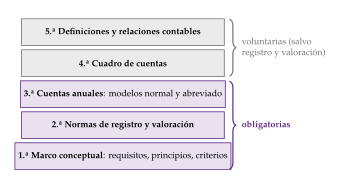
II.1. Marco conceptual de la contabilidad
El marco conceptual es la primera parte del PGC. Fija el objetivo de las cuentas anuales, la imagen fiel del patrimonio, de la situación financiera y de los resultados, y lo que hace falta para alcanzarlo: los requisitos de la información, los principios contables, los elementos de las cuentas (activo, pasivo, patrimonio neto, ingresos y gastos) y los criterios para registrarlos y valorarlos.
Requisitos de la información
Siguiendo el PGC, la información de las cuentas anuales debe cumplir 5 requisitos (RFICC):
Relevancia: es útil para tomar decisiones económicas, porque ayuda a evaluar sucesos pasados, presentes o futuros.
Fiabilidad: está libre de errores materiales y de sesgos, y representa fielmente lo que pretende representar.
Integridad: es una cualidad derivada de la fiabilidad; la información es íntegra cuando contiene todos los datos que pueden influir en las decisiones, sin omisiones significativas.
Comparabilidad: permite comparar las cuentas de una misma empresa en distintos periodos y las de distintas empresas en un mismo momento, porque las operaciones parecidas se tratan de forma parecida.
Claridad: un usuario con un conocimiento razonable de la economía, la contabilidad y las finanzas puede, con un examen diligente, formarse un juicio que le ayude a decidir.
Principios contables
Los principios contables del PGC son 6 (EDUPNI):
Empresa en funcionamiento: se supone, salvo prueba en contrario, que la empresa seguirá con su actividad, así que las cuentas no reflejan su valor de liquidación.
Devengo: los ingresos y gastos se imputan al ejercicio en que ocurren los hechos que los generan, con independencia de cuándo se cobren o se paguen.11
Uniformidad: los criterios elegidos se mantienen en el tiempo y se aplican a todas las operaciones parecidas, mientras no cambien los supuestos que motivaron su elección.
Prudencia: hay que ser prudente en las estimaciones bajo incertidumbre. Solo se contabilizan los beneficios obtenidos hasta el cierre, pero se tienen en cuenta todos los riesgos en cuanto se conocen. La prudencia no justifica que la valoración se aparte de la imagen fiel.
No compensación: salvo que una norma lo permita, no se compensan partidas del activo y del pasivo ni de gastos e ingresos; cada elemento se valora por separado.
Importancia relativa: se puede dejar de aplicar un principio o criterio si el efecto es poco significativo y no altera la imagen fiel.
En caso de conflicto entre principios, prevalece el que mejor conduzca a la imagen fiel.
El PGC de 2007 suprimió el principio del precio de adquisición del plan de 1990 (el coste histórico pasa a ser un criterio de valoración más) y quitó a la prudencia su preferencia sobre los demás principios. La partida doble no es un principio, sino el método de registro: cada operación se anota a la vez en el debe de una cuenta y en el haber de otra.
II.2. Normas de registro y valoración
Normas de registro: fondos y flujos
La información financiera se registra con 2 tipos de variables, como el agua de un depósito (figura 3) [ver tema 3.A.30]:
las variables fondo (stock) miden el nivel de los activos, los pasivos y el patrimonio neto en una fecha. Se registran en el balance, el estado de situación;
las variables flujo reflejan la creación, transformación, intercambio o extinción de valor durante un periodo, y cambian el volumen, la composición o el valor de los activos y pasivos. Se registran en los estados de circulación.
Los 2 se conectan: el balance final es el inicial más los flujos del periodo.
A diferencia de la contabilidad nacional, que valora los fondos a los precios de la fecha del balance, el PGC los valora sobre todo a coste histórico, con valor razonable solo para algunos instrumentos financieros.
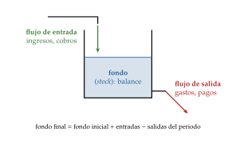
Fuente: elaboración propia.
Normas de valoración
La valoración asigna un importe monetario a cada elemento de las cuentas anuales. El marco conceptual define 10 criterios; los 4 principales son:
Coste histórico: el precio de adquisición del activo, si se compró, o su coste de producción, si lo produjo la empresa.
Valor razonable: el precio que se recibiría por vender un activo o se pagaría por transferir o cancelar un pasivo en una transacción ordenada entre participantes en el mercado, en la fecha de valoración (es la definición de la NIIF 13, que incorporó el Real Decreto 1/2021). No se deducen los costes de transacción, y no lo es el de una operación forzada, urgente o de liquidación involuntaria.
Valor neto realizable: lo que la empresa puede obtener al vender el activo en el curso normal del negocio, menos los costes de venderlo y, en las materias primas y productos en curso, de terminarlo. No es un precio de mercado, sino lo que la empresa espera obtener.
Coste amortizado: el valor inicial de un activo o pasivo financiero menos lo reembolsado, más o menos la parte imputada a resultados, con el tipo de interés efectivo, de la diferencia entre el valor inicial y el de reembolso, y, en los activos, menos los deterioros.
Los otros 6 son el valor actual, el valor en uso, los costes de venta, los costes de transacción de los instrumentos financieros, el valor contable o en libros y el valor residual (anexo C).12
Recapitulación y nexo: con los requisitos, los principios y los criterios ya se pueden formular las cuentas anuales, el núcleo de la información financiera.
II.3. Cuentas anuales
Las cuentas anuales son 5 documentos que forman una unidad:
el balance, el estado de situación;
la cuenta de pérdidas y ganancias, el estado de cambios en el patrimonio neto y el estado de flujos de efectivo, los estados de circulación;
y la memoria, que los explica.
Se formulan para cada ejercicio, que dura 12 meses salvo en la constitución, el cambio de la fecha de cierre o la disolución de la sociedad. Los formulan los administradores, que responden de ellas, en los 3 meses siguientes al cierre (el ciclo contable completo está en el anexo D).
Todas las sociedades siguen los mismos modelos, pero las más pequeñas pueden usar modelos abreviados, con menos partidas y una memoria más corta, y no están obligadas a presentar el estado de flujos de efectivo ni el de cambios en el patrimonio neto. Pueden aplicar, además, si quieren, el PGC de pymes, más sencillo.13
II.3.1. El balance: el estado de situación
El balance recoge el patrimonio de la empresa en una fecha: sus bienes y derechos y las fuentes con que se financian. Es una radiografía de su estructura (figura 4), y con él se analizan la liquidez y la solvencia.
La estructura económica es el activo: los bienes, derechos y otros recursos que controla la empresa y de los que espera obtener rendimientos. Se ordena de menor a mayor liquidez:
el activo no corriente (ANC) materializa la capacidad productiva: está vinculado a la empresa a medio y largo plazo, más allá del ciclo de explotación. Comprende el inmovilizado intangible (marcas, patentes, fondo de comercio),14 el inmovilizado material (terrenos, construcciones, instalaciones), las inversiones inmobiliarias (inmuebles que no se usan en la actividad), las inversiones financieras a largo plazo, en empresas del grupo y fuera de él, los activos por impuesto diferido (deducciones y bases imponibles negativas pendientes de aplicar) y los deudores comerciales no corrientes;
el activo corriente (AC) materializa el ciclo de explotación y no suele exceder el año: los activos no corrientes mantenidos para la venta, las existencias, los deudores comerciales, las inversiones financieras a corto plazo, las periodificaciones y el efectivo y otros activos líquidos equivalentes (caja, depósitos a la vista e inversiones convertibles en efectivo con vencimiento no superior a 3 meses desde su adquisición).
La estructura financiera dice de dónde salen los recursos invertidos en el activo. Se ordena de menor a mayor exigibilidad:
el patrimonio neto (PN), la financiación propia: lo que queda del activo una vez deducidos todos los pasivos. Lo forman los fondos propios (capital, prima de emisión, reservas, acciones propias en negativo, resultados de ejercicios anteriores, otras aportaciones de socios, resultado del ejercicio y dividendo a cuenta en negativo), los ajustes por cambios de valor y las subvenciones, donaciones y legados recibidos. El beneficio que la empresa retiene aumenta sus fondos propios;
el pasivo, las obligaciones actuales surgidas de sucesos pasados que la empresa espera cancelar entregando recursos, incluidas las provisiones. Se divide en pasivo no corriente (PNC), con vencimiento a más de un año (provisiones, deudas y deudas con empresas del grupo a largo plazo, pasivos por impuesto diferido, periodificaciones), y pasivo corriente (PC), con vencimiento a menos de un año (provisiones y deudas a corto plazo, acreedores comerciales, periodificaciones y pasivos vinculados con activos mantenidos para la venta).
Activo y estructura financiera cuadran siempre, por la partida doble: \(AT\equiv\mathrm{PN}+\mathrm{PNC}+\mathrm{PC}\).
La estructura del balance depende del negocio: una eléctrica tiene sobre todo inmovilizado; un supermercado, existencias y proveedores. Todo análisis tiene que tenerlo en cuenta.
El balance es una foto: no dice cómo han evolucionado sus elementos. Para eso están los estados de circulación.
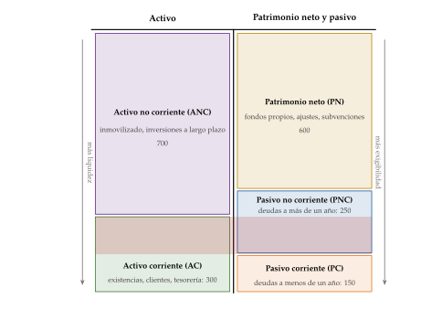
II.3.2. La cuenta de pérdidas y ganancias
La cuenta de pérdidas y ganancias es la relación ordenada y valorada de los ingresos y gastos del ejercicio: los flujos económicos. Si los ingresos superan a los gastos, el patrimonio neto aumenta.
Ingresos y gastos no son cobros y pagos: comprar un local reduce el efectivo y aumenta el inmovilizado, pero no cambia el patrimonio neto.15
Es el estado que mide la capacidad de la empresa para generar beneficios, su objetivo último. Distingue 2 tipos de operaciones (tabla 2):
las operaciones continuadas, el resultado recurrente, en 3 escalones:
el resultado de explotación, el de la actividad: la cifra de negocios (ventas y prestaciones de servicios), la variación de existencias de productos terminados y en curso, los trabajos para el propio activo y otros ingresos de explotación, como las subvenciones, menos los aprovisionamientos (el consumo de mercaderías y materias primas), los gastos de personal (sueldos, salarios y cargas sociales), los otros gastos de explotación (servicios exteriores, tributos, pérdidas por créditos comerciales) y la amortización del inmovilizado, más otros resultados (deterioros y enajenaciones del inmovilizado, excesos de provisiones);16,17
el resultado financiero: ingresos y gastos financieros, variación del valor razonable de los instrumentos financieros, diferencias de cambio y deterioros y enajenaciones de instrumentos financieros;
su suma es el resultado antes de impuestos; restando el impuesto sobre beneficios queda el resultado de las operaciones continuadas;
y las operaciones interrumpidas: el resultado, neto de impuestos, de una línea de negocio o un área geográfica significativa que se ha vendido o se va a vender, y que no se repetirá.18
Su suma es el resultado del ejercicio, el beneficio neto.
El resultado contable es también el punto de partida de la base imponible del impuesto sobre sociedades, que lo corrige con los ajustes que pide la ley fiscal [ver tema 4.B.17].
| Partidas del PGC | En el análisis |
|---|---|
| Ingresos de explotación menos gastos de explotación salvo amortizaciones y deterioros | EBITDA |
| \(-\) Amortización del inmovilizado y deterioros | |
| A.1) Resultado de explotación | EBIT |
| \(\pm\) Ingresos y gastos financieros y otros resultados financieros | |
| A.2) Resultado financiero | |
| A.3) Resultado antes de impuestos (A.1 + A.2) | EBT |
| \(-\) Impuestos sobre beneficios | |
| A.4) Resultado de las operaciones continuadas | |
| \(\pm\) Resultado de las operaciones interrumpidas, neto de impuestos | |
| A.5) Resultado del ejercicio | BN (beneficio neto) |
Fuente: elaboración propia a partir de Ministerio de Economía y Hacienda (2007a), tercera parte.
El analista la resume en 4 escalones, de arriba abajo (figura 5):
el EBITDA (earnings before interest, taxes, depreciation and amortization), el resultado bruto de explotación: el resultado de explotación antes de amortizaciones y deterioros. No es una partida del PGC, sino una medida alternativa de rendimiento;
el EBIT (earnings before interest and taxes), el resultado de explotación (A.1): el EBITDA menos amortizaciones y deterioros, lo que generan los activos para todos los que los financian;
el EBT (earnings before taxes), el resultado antes de impuestos (A.3): el EBIT más el resultado financiero, lo que queda tras pagar a los acreedores;
y el beneficio neto, BN, el resultado del ejercicio (A.5): lo que queda para los accionistas tras el impuesto sobre beneficios.
Una medida más: el EBIAT, el EBIT después de impuestos, \(\mathrm{EBIT}\,(1-t_{IS})\), con el que se comparan empresas con regímenes fiscales distintos y que es el punto de partida del flujo de caja libre [ver tema 3.B.4].
El PGC presenta los gastos por naturaleza (personal, aprovisionamientos, amortización), no por funciones (coste de las ventas, gastos comerciales y de administración), que es como lo hacen muchas empresas que aplican las NIIF. Por eso el margen bruto no aparece en la cuenta: hay que calcularlo con el coste de las ventas.19
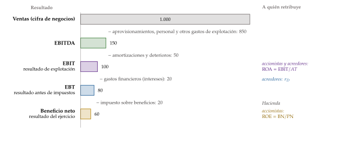
II.3.3. El estado de cambios en el patrimonio neto
No todo lo que cambia el patrimonio neto pasa por la cuenta de pérdidas y ganancias. El estado de cambios en el patrimonio neto (ECPN), obligatorio desde el PGC de 2007 para quien no puede formular balance abreviado, explica cómo ha variado el patrimonio neto durante el ejercicio. Tiene 2 partes:
el estado de ingresos y gastos reconocidos: el resultado de la cuenta de pérdidas y ganancias, más los ingresos y gastos imputados directamente al patrimonio neto (por ejemplo, ciertos cambios de valor razonable de activos financieros o las subvenciones de capital recibidas), menos las transferencias a la cuenta de pérdidas y ganancias de lo imputado antes;
y el estado total de cambios en el patrimonio neto: del saldo inicial, con los ajustes por cambios de criterio y por errores, al saldo final, con el total de ingresos y gastos reconocidos, las operaciones con los socios (ampliaciones y reducciones de capital, dividendos, operaciones con acciones propias, conversión de pasivos en patrimonio) y otras variaciones.
Se justifica porque hay partidas que cambian el patrimonio neto, a veces por importes grandes, sin pasar por el resultado del ejercicio.
II.3.4. El estado de flujos de efectivo
El estado de flujos de efectivo (EFE), obligatorio desde el PGC de 2007 salvo para quien puede formular balance abreviado, explica cómo ha variado el efectivo y sus equivalentes. Es necesario porque los proveedores, los bancos y Hacienda cobran en dinero, no en beneficios: una empresa con beneficios puede quebrar si no genera caja a tiempo.
Clasifica los cobros y pagos en 3 bloques, más un ajuste:
los flujos de las actividades de explotación: los de las operaciones que forman el resultado. El PGC los presenta por el método indirecto: parte del resultado antes de impuestos, suma lo que no es caja (amortizaciones, deterioros, provisiones), corrige los cambios en el capital corriente (existencias, clientes, proveedores) y los cobros y pagos de intereses, dividendos e impuestos;20
los flujos de las actividades de inversión: pagos por inversiones y cobros por desinversiones en inmovilizado y activos financieros. Invertir es renunciar a una caja cierta hoy para aumentar los flujos de explotación futuros, más allá del ciclo actual [ver tema 3.B.2];
los flujos de las actividades de financiación: cobros y pagos por instrumentos de patrimonio (ampliaciones de capital, compra de acciones propias) y de pasivo financiero (emisión y devolución de deuda), y pagos de dividendos;
y el efecto de las variaciones de los tipos de cambio sobre el efectivo en divisas.
Su suma es el aumento o disminución neta del efectivo, que cuadra con la variación de esa partida del balance.
II.3.5. La memoria y otra información
La memoria amplía, completa y comenta los otros documentos. Es la parte más larga y, para el analista, la más útil, porque dice cómo se han hecho las cifras. En el modelo normal incluye, entre otras cosas:
la actividad de la empresa, las bases de presentación (imagen fiel, cambios de criterio, errores) y la aplicación del resultado;
las normas de registro y valoración que ha elegido la empresa donde el PGC deja opciones;
el detalle de las partidas (inmovilizado, arrendamientos, instrumentos financieros y sus riesgos, existencias, moneda extranjera, situación fiscal, provisiones y contingencias);
la información medioambiental, los hechos posteriores al cierre y las operaciones con partes vinculadas;
y otra información: plantilla, honorarios de los auditores, periodo medio de pago a proveedores e información por actividades y mercados.
Junto a las cuentas anuales, aunque no forman parte de ellas, hay otros 2 documentos:
el informe de auditoría, en el que un auditor independiente opina si las cuentas expresan la imagen fiel;21
y el informe de gestión, en el que los administradores explican la evolución del negocio, su situación, sus riesgos e incertidumbres y lo previsible. No lo necesitan las sociedades que pueden formular balance abreviado.
Cuando una sociedad controla a otras forma un grupo, y la dominante formula además cuentas consolidadas, como si el grupo fuera una sola empresa:
las dependientes, que controla, se integran partida a partida (integración global), eliminando las operaciones internas y separando la parte de los socios externos;
las asociadas, en las que tiene influencia significativa, se valoran por puesta en equivalencia: en una sola línea, con la parte que le corresponde de su patrimonio neto.
Las grandes empresas publican, además, información de sostenibilidad: cómo les afectan los riesgos ambientales, sociales y de gobernanza, y cómo afectan ellas a las personas y al medio ambiente (la doble materialidad).
En España la exige el estado de información no financiera, dentro del informe de gestión, desde los ejercicios de 2017. Desde 2021 lo elaboran las sociedades de más de 250 trabajadores que sean entidades de interés público o superen 20 millones de euros de activo o 40 de cifra de negocios. Trata de medio ambiente, cuestiones sociales y de personal, derechos humanos, lucha contra la corrupción y diversidad, y lo verifica un tercero.
La Unión lo sustituye por la Directiva sobre información corporativa en materia de sostenibilidad (Corporate Sustainability Reporting Directive, CSRD), con normas europeas comunes (las ESRS) y verificación obligatoria. Su alcance se ha recortado: se aplazó en 2025 y la Directiva ómnibus de 2026 la limita, desde los ejercicios de 2027, a las empresas de más de 1.000 trabajadores y más de 450 millones de euros de cifra de negocios, con normas simplificadas [ver tema 3.B.31].
España no la ha traspuesto: el proyecto de ley decayó con la disolución de las Cortes en octubre de 2026, de modo que sigue el estado de información no financiera, con la recomendación de la CNMV y el ICAC de elaborarlo ya con las normas europeas.
Recapitulación: un estado de situación, 3 de circulación y una memoria, verificados por un auditor y acompañados del informe de gestión.
II.4. Cuadro de cuentas
El cuadro de cuentas, cuarta parte del PGC, no es obligatorio. Codifica en forma decimal los grupos, subgrupos y cuentas, con un título que expresa su contenido.
Tiene 9 grupos (tabla 3): los 5 primeros son cuentas de balance (de situación) y los 4 últimos recogen flujos: los grupos 6 y 7, los gastos e ingresos de la cuenta de pérdidas y ganancias, y los grupos 8 y 9, los gastos e ingresos imputados directamente al patrimonio neto, que forman el ECPN.
| Grupo | Nombre | Estado |
|---|---|---|
| 1 | Financiación básica | |
| 2 | Activo no corriente | |
| 3 | Existencias | Balance (situación) |
| 4 | Acreedores y deudores por operaciones comerciales | |
| 5 | Cuentas financieras | |
| 6 | Compras y gastos | |
| 7 | Ventas e ingresos | Pérdidas y ganancias (circulación) |
| 8 | Gastos imputados al patrimonio neto | |
| 9 | Ingresos imputados al patrimonio neto | ECPN (circulación) |
Fuente: elaboración propia a partir de Ministerio de Economía y Hacienda (2007a), cuarta parte.
II.5. Definiciones y relaciones contables
La quinta parte del PGC tampoco es obligatoria, salvo en lo que afecta al registro o a la valoración. Define las partidas del balance, de la cuenta de pérdidas y ganancias y del ECPN y cada una de sus cuentas, con los motivos de cargo y abono: profundiza en el contenido de cada cuenta.
Recapitulación y nexo: las cuentas anuales son la vertiente descriptiva de la información financiera. Para comprenderla y comparar hacen falta métodos de análisis.
III. Métodos de análisis económico y financiero de la empresa
Conclusión anticipada: las cuentas describen; el análisis interpreta. Una empresa está sana si puede pagar a corto plazo (liquidez), si puede pagar todas sus deudas (solvencia) y si remunera a quienes la financian por encima de lo que cuesta su dinero (rentabilidad). El análisis financiero estudia las 2 primeras; el análisis económico, la rentabilidad de los activos, y los 2 se unen en la rentabilidad del accionista.
El método (tabla 4):
Fases: el análisis empieza por la pregunta (¿se le presta?, ¿se compra?, ¿se gestiona mejor?) y sigue con la recogida de la información (cuentas, memoria, auditoría, datos del sector), su depuración, el cálculo de indicadores, su interpretación y el diagnóstico.
Ajustes previos: las cuentas se reclasifican para analizarlas. En el balance se separa lo operativo (inmovilizado, existencias, clientes, proveedores) de lo financiero (deuda con coste, tesorería e inversiones financieras); en la cuenta de resultados, lo recurrente de lo extraordinario y lo operativo de lo financiero.
Técnicas: el análisis vertical o estático, que expresa cada partida en porcentaje del total; el análisis horizontal o dinámico, que sigue cada partida en el tiempo; las ratios, cocientes entre partidas relacionadas, y la comparación con la propia empresa en el pasado, con el sector y con un valor de referencia. La Central de Balances del Banco de España publica las ratios sectoriales de las empresas españolas [ver tema 4.A.8].
Límites: no hay valores óptimos universales (un supermercado vive con fondo de maniobra negativo); el balance es una foto en una fecha que la empresa puede elegir o maquillar; las cifras dependen de los criterios contables y de la inflación, y una ratio sola no dice nada. Las cuentas no mienten, pero hay que saber leerlas.
Medidas alternativas de rendimiento (alternative performance measures): las empresas publican magnitudes propias, como el EBITDA ajustado o la deuda neta, a veces en cuentas pro forma que excluyen lo que consideran no recurrente. Son útiles, pero cada empresa las define a su manera:
desde 2016, la Autoridad Europea de Valores y Mercados (ESMA) exige que las cotizadas las definan, las concilien con las cuentas y no les den más relieve que a estas;
y la NIIF 18 obliga desde 2027 a presentar en la cuenta de resultados de los grupos cotizados un resultado de explotación y un resultado antes de financiación e impuestos con una definición común, y a conciliar en la memoria las medidas de rendimiento definidas por la dirección.
El orden es el de los plazos: primero la liquidez (el corto plazo), después la solvencia (el largo) y, por último, la rentabilidad, que es la que sostiene a las otras 2.
El ejemplo: una misma empresa acompaña todo el análisis (tabla 5). Para simplificar, paga al contado a sus proveedores, así que todo su pasivo es deuda con coste.
| Técnica | Qué hace | Qué dice |
|---|---|---|
| Análisis vertical | Cada partida en porcentaje del activo o de las ventas (estados porcentuales) | Cómo está hecha la empresa; compara empresas de distinto tamaño |
| Análisis horizontal | Variación de cada partida entre ejercicios, en tasas o números índice | Hacia dónde va: las tendencias |
| Ratios | Cocientes entre 2 partidas con sentido económico | Liquidez, solvencia y rentabilidad |
| Comparación | Con el pasado, con el sector (Central de Balances) y con una referencia | Si la cifra es buena o mala |
Fuente: elaboración propia a partir de Garrido Miralles y Íñiguez Sánchez (2017).
| Balance | Cuenta de resultados | ||
|---|---|---|---|
| Activo no corriente | 700 | Ventas | 1.000 |
| Existencias | 100 | \(-\) Costes variables (aprovisionamientos) | 600 |
| Clientes | 125 | \(-\) Costes fijos sin amortización | 250 |
| Tesorería | 75 | EBITDA | 150 |
| Activo total | 1.000 | \(-\) Amortizaciones | 50 |
| 1-2 Patrimonio neto | 600 | EBIT | 100 |
| Deuda bancaria a largo plazo | 250 | \(-\) Intereses (5 % de 400) | 20 |
| Deuda bancaria a corto plazo | 150 | EBT | 80 |
| \(-\) Impuesto sobre sociedades (25 %) | 20 | ||
| Patrimonio neto y pasivo | 1.000 | Beneficio neto | 60 |
Fuente: elaboración propia. Los costes fijos suman 300, con la amortización.
III.1. Análisis de la liquidez
La liquidez es la capacidad de la empresa para atender sus pagos a corto plazo. El riesgo aparece cuando los activos tardan más en convertirse en dinero que los pasivos en vencer.22
El activo y el pasivo corrientes no son homogéneos (tabla 6):
el activo corriente va del menos al más líquido: el realizable condicionado (las existencias, que primero hay que vender), el realizable cierto (clientes y otros deudores) y el disponible (la tesorería);
el pasivo corriente va de la financiación espontánea, que nace de la propia actividad y no tiene coste explícito (proveedores, Hacienda, Seguridad Social, anticipos de clientes), a la negociada, que tiene coste (préstamos y créditos bancarios a corto plazo, pagarés).
| Activo corriente | Pasivo corriente |
|---|---|
| Realizable condicionado: activos no corrientes mantenidos para la venta; existencias | Financiación espontánea: proveedores, acreedores, administraciones públicas, remuneraciones pendientes de pago, anticipos de clientes |
| Realizable cierto: clientes y otros deudores; inversiones financieras a corto plazo que no son tesorería | Otra financiación sin coste explícito: dividendos pendientes de pago, provisiones a corto plazo |
| Periodificaciones: gastos pagados por anticipado | Financiación negociada: deudas con entidades de crédito, obligaciones y pagarés a corto plazo |
| Disponible: efectivo y otros activos líquidos equivalentes | Periodificaciones y pasivos vinculados con activos mantenidos para la venta |
Fuente: elaboración propia a partir de Garrido Miralles y Íñiguez Sánchez (2017).
III.1.1. Análisis de la liquidez basado en el balance
Fondo de maniobra
El fondo de maniobra (FM) es la parte del activo corriente que se financia con recursos permanentes, el patrimonio neto y el pasivo no corriente (figura 6): \[\tag{1} \mathrm{FM}\equiv\underbrace{(\mathrm{PN}+\mathrm{PNC})-\mathrm{ANC}}_{\text{por arriba del balance}}=\underbrace{\mathrm{AC}-\mathrm{PC}}_{\text{por abajo}}.\]
Un fondo de maniobra positivo indica que la empresa tiene activos que vencen a corto con los que atender las deudas que vencen a corto.
Uno negativo puede indicar un desequilibrio: deudas que vencen en el año financiando activos que no se convertirán en dinero en ese plazo. Pero no siempre es un problema: hay sectores que funcionan bien con fondo de maniobra negativo, como los supermercados, que cobran al contado y pagan a sus proveedores a plazo, y se financian así con ellos.
En la empresa del ejemplo (tabla 5), con un activo corriente de 300 y una deuda a corto de 150, el fondo de maniobra es de 150: lo mismo que la diferencia entre los recursos permanentes, \(600+250\), y el activo no corriente, 700.
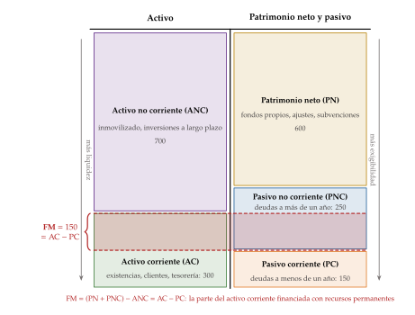
Fuente: elaboración propia a partir de Garrido Miralles y Íñiguez Sánchez (2017).
Necesidades operativas de fondos
El fondo de maniobra que la empresa tiene hay que compararlo con el que necesita: las necesidades operativas de fondos (NOF), la parte del activo corriente operativo que no financian los pasivos corrientes operativos o espontáneos (proveedores, administraciones públicas), que nacen de la propia actividad y no tienen coste:23
suman las partidas que la empresa todavía no ha convertido en efectivo, como las existencias o los clientes;
y restan las que todavía no le han costado efectivo, como lo que debe a sus proveedores o los anticipos de clientes.
Separando el corriente en su parte operativa y su parte financiera (tesorería, inversiones financieras y deuda a corto con coste): \[\left.\begin{aligned} \mathrm{NOF}&\equiv\mathrm{AC}_{\mathrm{op}}-\mathrm{PC}_{\mathrm{op}}\\ \mathrm{FM}&=\big(\mathrm{AC}_{\mathrm{op}}+\mathrm{AC}_{\mathrm{fin}}\big)-\big(\mathrm{PC}_{\mathrm{op}}+\mathrm{PC}_{\mathrm{fin}}\big) \end{aligned}\right\} \;\Longrightarrow\; \mathrm{NOF}-\mathrm{FM}=\mathrm{PC}_{\mathrm{fin}}-\mathrm{AC}_{\mathrm{fin}}.\]
Las NOF que no cubre el fondo de maniobra se financian con deuda a corto plazo neta de tesorería. Si \(\mathrm{NOF}>\mathrm{FM}\), la empresa depende de renovar esa deuda: es una señal de tensión de liquidez. Si \(\mathrm{NOF}<\mathrm{FM}\), le sobra tesorería, que da seguridad pero rinde poco.
Por eso, mientras un fondo de maniobra alto se suele ver como algo bueno, unas NOF altas se ven como algo malo: pueden indicar exceso de existencias o de tesorería ociosa, ventas a crédito largas o pagos al contado.
Muchas empresas tienen NOF negativas y las usan como fuente de financiación: las de venta por internet, que cobran al contado y tienen pocas existencias, o las grandes superficies, que cobran al contado y pagan a plazo.
En la empresa del ejemplo, sin proveedores, las NOF son las existencias más los clientes, \(100+125=225\), más que su fondo de maniobra, 150: los 75 de diferencia se financian con la deuda bancaria a corto, 150, menos la tesorería, 75.
Las NOF dependen del ciclo de explotación: la empresa paga materias primas, las transforma, vende a crédito y cobra, y con lo cobrado vuelve a comprar (figura 7). Se mide con los periodos medios, en días:24
de almacén, \(\mathrm{PMA}=\text{existencias}/(\text{coste de las ventas}/360)\);
de cobro, \(\mathrm{PMC}=\text{clientes}/(\text{ventas}/360)\);
y de pago, \(\mathrm{PMP}=\text{proveedores}/(\text{compras}/360)\).
\(\mathrm{PMA}+\mathrm{PMC}\) es el periodo medio de maduración económico, los días que pasan desde que entra la mercancía hasta que se cobra; restando el PMP queda el financiero o ciclo de caja, los días que la empresa tiene que financiar por su cuenta. Las NOF son, aproximadamente, las ventas diarias por esos días (derivación en el anexo B).
En la empresa del ejemplo, con ventas de 1.000 y un coste de las ventas de 600, las existencias de 100 equivalen a 60 días de almacén y los clientes de 125, a 45 días de cobro: un ciclo de 105 días que financia entera, porque paga al contado. Si negociara pagar a 90 días unas compras de 600, tendría 150 de proveedores, sus NOF bajarían a 75 y su fondo de maniobra, 150, le sobraría.
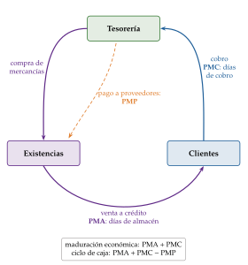
Fuente: elaboración propia.
Ratios de liquidez
La ratio de liquidez general compara lo que se convertirá en dinero a corto plazo con lo que hay que pagar a corto:25 \[\text{liquidez general}\equiv\frac{\mathrm{AC}}{\mathrm{PC}}.\] Si es mayor que 1, el fondo de maniobra es positivo. No hay un valor válido para todos los sectores, aunque se suele pedir que supere 1 con holgura. En el ejemplo, \(300/150=2\).
La prueba ácida (acid test), que el original llamaba ratio de tesorería inmediata, quita del numerador lo que no se convierte pronto en dinero: \[\text{prueba ácida}\equiv\frac{\mathrm{AC}-\text{existencias}-\text{activos no corrientes mantenidos para la venta}}{\mathrm{PC}}.\] Los anticipos a proveedores ya están dentro de las existencias en el balance del PGC. Por debajo de 1 avisa de problemas de liquidez a corto plazo, salvo en los sectores que viven de sus proveedores. En el ejemplo, \((300-100)/150\simeq1{,}33\).
La ratio de tesorería solo cuenta el disponible: \(\text{efectivo y equivalentes}/\mathrm{PC}\). Un valor alto da seguridad, pero el dinero ocioso rinde poco: bien gestionada, puede ser pequeña. En el ejemplo, \(75/150=0{,}5\).
III.1.2. Análisis de la liquidez con el estado de flujos de efectivo
El balance da la liquidez en una fecha; el estado de flujos de efectivo, la capacidad de generarla durante el ejercicio, sin depender de los criterios de amortización ni de valoración:
el flujo de explotación frente al resultado mide la calidad del beneficio: un beneficio que no se convierte en caja, porque los clientes y las existencias crecen más que las ventas, es la primera señal de alarma del analista. Sloan (1996) muestra que los beneficios con mucho componente de devengo (accruals) son menos persistentes que los que son caja, y que el mercado no lo descuenta del todo;
el flujo de caja libre (free cash flow) es la caja que generan los activos después de impuestos y de las inversiones necesarias, como si la empresa no tuviera deuda, la que queda para pagar a accionistas y acreedores. Desde la cuenta de resultados, con el CAPEX como inversión en inmovilizado: \[\mathrm{FCL}_t=\mathrm{EBIT}_t\,(1-t_{IS})+\text{amortizaciones}_t-\mathrm{CAPEX}_t-\Delta\mathrm{NOF}_t.\] Es el flujo que se descuenta para valorar la empresa [ver tema 3.B.4];
y el patrón de los 3 flujos dice en qué fase está la empresa: una madura genera caja en la explotación y la usa para invertir, devolver deuda y pagar dividendos; una joven en expansión consume caja en la explotación y en la inversión, y la obtiene de la financiación.
III.1.3. ¿Qué hacer si hay problemas de liquidez?
Si el análisis revela problemas de liquidez, la empresa puede:
aplazar pagos y adelantar cobros, o ceder sus créditos a clientes a un tercero (factoring);
reducir las existencias;
renegociar la deuda a corto para pasarla a largo plazo;
reducir el dividendo y aumentar la autofinanciación;
o ampliar capital [ver tema 3.B.3].
Recapitulación y nexo: la liquidez mira al año que viene. La solvencia mira más lejos: si la empresa puede pagar todas sus deudas.
III.2. Análisis de la solvencia
La solvencia es la capacidad de la empresa para hacer frente a todas sus obligaciones. Tiene 2 caras: la estática, si el activo cubre el pasivo (la garantía de los acreedores si la empresa se liquidara), que se mide con el balance, y la dinámica, si el negocio genera recursos para devolver la deuda, que se mide con la cuenta de resultados.
III.2.1. Análisis de la solvencia basado en el balance
Los equilibrios patrimoniales
El análisis de la estructura patrimonial combina el patrimonio neto y el fondo de maniobra en 4 situaciones, de más a menos sana (figura 8):
estabilidad total: todo el activo se financia con patrimonio neto, sin deudas; es poco frecuente y poco rentable;
estabilidad normal: el patrimonio neto y el fondo de maniobra son positivos, de modo que los recursos permanentes cubren el activo no corriente y parte del corriente. Es la de la empresa del ejemplo;
desequilibrio a corto plazo: el patrimonio neto es positivo, pero el fondo de maniobra es negativo; hay un problema de liquidez, salvo en los sectores que se financian con sus proveedores;
y quiebra técnica: las pérdidas acumuladas han consumido el patrimonio neto, que es negativo: el activo no cubre el pasivo.
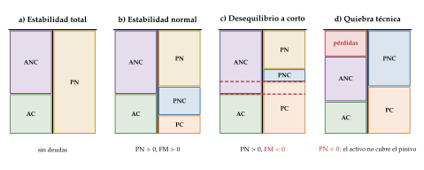
Fuente: elaboración propia a partir de Garrido Miralles y Íñiguez Sánchez (2017).
Ratios de solvencia
La ratio de solvencia o de garantía, \(AT/\text{pasivo}\), es mayor que 1 si y solo si el patrimonio neto es positivo. Por debajo de 1 la empresa está en quiebra técnica, pero eso no la lleva por sí solo al concurso de acreedores:
el concurso exige insolvencia, no poder cumplir con regularidad las obligaciones exigibles, actual o inminente: una empresa con patrimonio neto negativo que sigue pagando no tiene por qué entrar en concurso;
antes llega la causa de disolución: las pérdidas que dejan el patrimonio neto por debajo de la mitad del capital social obligan a disolver la sociedad, salvo que se aumente o se reduzca el capital. Los costes de una insolvencia limitan cuánta deuda conviene [ver tema 3.B.3].
En el ejemplo, \(1.000/400=2{,}5\).
La ratio de financiación propia, \(\mathrm{PN}/AT\), mide qué parte del activo financian los propietarios. En el ejemplo, el 60 %.
La ratio de endeudamiento compara la financiación ajena con la propia:
con todo el pasivo, \(\text{pasivo}/\mathrm{PN}\), mide cuánto pesan las deudas frente a los recursos propios. Varía mucho entre sectores y épocas; por encima de 1, la financiación ajena supera a la propia y se suele considerar alta;
con la deuda con coste, \(V_D/V_E\), es la que interviene en el apalancamiento financiero (3) y en la estructura de capital [ver tema 3.B.3]. En el ejemplo, \(400/600=2/3\);
y es un indicador criticado: una eléctrica regulada, con ingresos estables, puede sostener más deuda que una tecnológica con flujos volátiles. Por eso la solvencia se mide también frente a lo que genera el negocio.
La solvencia de los bancos. En las entidades de crédito, el equivalente regulatorio de la ratio de financiación propia son los requisitos de capital de Basilea III, que se miden sobre los activos ponderados por riesgo (APR) y no sobre el activo total:
al menos un 4,5 % de capital ordinario de nivel 1 (CET1), un 6 % de nivel 1 (Tier 1) y un 8 % de capital total sobre los APR, más unos colchones;
y una ratio de apalancamiento, el capital de nivel 1 sobre la exposición total sin ponderar, de al menos el 3 %: la más parecida a la ratio de financiación propia de una empresa.
En la Unión los aplican el Reglamento (UE) 575/2013 y su reforma de 2024, que incorpora el acuerdo final de Basilea III desde 2025. Aquí no se tratan los colchones ni las ratios de liquidez bancarias [ver tema 3.B.27].
III.2.2. Análisis de la solvencia basado en la cuenta de pérdidas y ganancias
La solvencia dinámica compara la deuda con los recursos que genera la actividad. Lo ideal sería proyectar los flujos de caja con el plan de negocio, pero es incierto y casi nunca está al alcance de un analista de fuera; por eso se usan aproximaciones.
Deuda neta sobre EBITDA
La deuda neta es la deuda financiera con coste (préstamos y créditos bancarios, obligaciones, arrendamientos y otras deudas financieras, a largo y a corto plazo) menos el efectivo y las inversiones financieras a corto plazo. No incluye los proveedores ni las provisiones. Si es negativa, la empresa tiene caja neta.
El EBITDA se acerca al flujo de caja de la explotación, pero no lo es: no descuenta los impuestos, la inversión en NOF ni la de reposición del inmovilizado.
La ratio \[\frac{\text{deuda neta}}{\mathrm{EBITDA}}\] dice cuántos años de resultado bruto de explotación harían falta para devolver la deuda si todo se dedicara a ello: con 2,5, unos 2 años y medio. Es la que más usan los bancos en las cláusulas de los préstamos (covenants) y las agencias de calificación; cuanto más alta, más dudas sobre la solvencia, aunque el umbral depende del sector.
En el ejemplo, la deuda neta es \(400-75=325\) y la ratio, \(325/150\simeq2{,}2\) años.
Desde 2019, la NIIF 16 obliga a las empresas que aplican las NIIF a registrar casi todos los arrendamientos como deuda y su gasto como amortización e intereses: sube a la vez la deuda neta y el EBITDA, y la ratio deja de ser comparable con la de años anteriores o con la de empresas que aplican el PGC.
Cobertura de intereses
La ratio de cobertura de intereses, \(\mathrm{EBIT}/\text{gastos financieros}\), dice cuántas veces cubre el resultado de explotación los intereses (hay quien la calcula con el EBITDA). Por debajo de 1, el negocio no da para pagarlos; como referencia orientativa, por encima de 3 se considera holgada. En el ejemplo, \(100/20=5\).
De las ratios a la predicción de la insolvencia. Altman (1968) combinó 5 ratios en un solo indicador con un análisis discriminante sobre empresas manufactureras cotizadas de Estados Unidos, la Z de Altman: el fondo de maniobra, los beneficios retenidos y el EBIT, todos sobre el activo total; el valor de mercado de los fondos propios sobre la deuda total, y las ventas sobre el activo. Por debajo de un umbral, la probabilidad de quiebra en los 2 años siguientes era alta. Es el origen de los modelos de calificación (scoring) que usan hoy los bancos [ver tema 3.B.26].
Recapitulación y nexo: una empresa solvente cubre sus deudas con lo que tiene y con lo que genera. Pero lo que genera depende de su rentabilidad, que es la que sostiene la liquidez y la solvencia.
III.3. Análisis de la rentabilidad: análisis económico y financiero
Conclusión anticipada: la empresa crea valor para sus accionistas si sus activos rinden más de lo que cuesta financiarlos, y la deuda amplifica tanto la rentabilidad como el riesgo.
La cuenta de resultados se reordena para asignar cada resultado a quien financia lo que lo genera (figura 5):
el EBIT retribuye a todos los que financian el activo, accionistas y acreedores: de él sale la rentabilidad económica, el ROA;
los intereses retribuyen a los acreedores: su coste, \(r_D\);
y el beneficio neto, a los accionistas: de él sale la rentabilidad financiera, el ROE.
Algunos manuales suman al resultado de explotación los ingresos financieros para obtener el resultado antes de intereses e impuestos, lo que rinden todos los activos, también los financieros. Aquí, como en el resto del temario, el EBIT es el resultado de explotación.
III.3.1. Análisis económico
Márgenes
Un margen es un resultado sobre las ventas. Hay 3 márgenes de la explotación:26
el margen bruto, \((\text{ventas}-\text{coste de las ventas})/\text{ventas}\);
el margen EBITDA, \(\mathrm{EBITDA}/\text{ventas}\);
y el margen operativo, \(\mathrm{EBIT}/\text{ventas}\). En el ejemplo, el 10 %.
Vender más no mejora por sí solo un margen, que es un cociente sobre las ventas. Mejora si sube el precio o bajan los costes unitarios y, con costes fijos, también si las ventas crecen, porque los costes fijos se reparten entre más unidades: es el apalancamiento operativo.
Rentabilidad económica
La rentabilidad económica (ROA, return on assets) mide lo que rinden los activos con independencia de cómo se financien: la rentabilidad de accionistas y acreedores juntos. Es el resultado de explotación sobre el activo total [ver tema 3.B.2]:27
\[\mathrm{ROA}\equiv\frac{\mathrm{EBIT}}{AT}=\underbrace{\frac{\mathrm{EBIT}}{\text{ventas}}}_{\text{margen}}\cdot\underbrace{\frac{\text{ventas}}{AT}}_{\text{rotación}}\tag{2}\]
El margen es la rentabilidad comercial; la rotación mide la eficiencia con que la empresa usa sus activos para vender.
Para subir su ROA, la empresa puede aumentar su margen (subir precios o reducir costes) o su rotación (vender más con el mismo activo). Son 2 estrategias: la del lujo, mucho margen y poca rotación, y la de las grandes superficies de alimentación, poco margen y mucha rotación.
En el ejemplo, con un margen del 10 % y una rotación de 1, el ROA es del 10 %.
Las rentabilidades se juzgan comparándolas: en el primer semestre de 2026, la rentabilidad del activo de las grandes empresas no financieras españolas subió al 5,7 %, pero casi todo por la energía y el refino; sin ellos apenas pasó del 4,1 al 4,2 %, y la industria y la información y comunicaciones se movieron en sentidos opuestos (gráfico 1). Una media agregada puede esconder mucho.
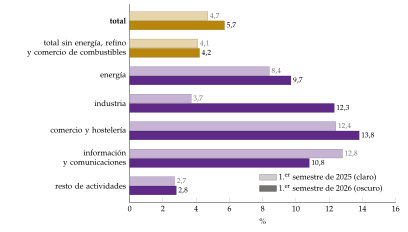
Fuente: Banco de España, Central de Balances Trimestral (839 empresas), ratio R.1.
Riesgo económico: el punto muerto y el apalancamiento operativo
a) Idea
¿Cuánto tiene que vender la empresa para no perder dinero, y cuánto cambia su resultado cuando cambian sus ventas? Las 2 respuestas dependen de cuántos de sus costes son fijos: el riesgo económico u operativo es la variabilidad del EBIT ante cambios en las ventas [ver tema 3.B.2].
b) Modelo
i) Supuestos:
un precio \(p\) y un coste variable unitario \(c\) constantes, con \(p>c\);
unos costes fijos, CF, dados, de modo que \(C(q)=\mathrm{CF}+c\,q\);
el EBIT es, entonces, \(\mathrm{EBIT}=(p-c)\,q-\mathrm{CF}\).
ii) Desarrollo, en 2 pasos:
el punto muerto: el punto muerto o umbral de rentabilidad (breakeven point) es la cantidad con la que los ingresos igualan a los costes y el EBIT es cero: \[p\,q=c\,q+\mathrm{CF}\quad\Longrightarrow\quad q^{\mathrm{PM}}=\frac{\mathrm{CF}}{p-c}.\] El denominador es el margen de contribución unitario, lo que deja cada unidad para cubrir los costes fijos. Por debajo del punto muerto hay pérdidas; por encima, beneficios;
el grado de apalancamiento operativo: el GAO mide cuánto varía en porcentaje el EBIT cuando las ventas varían un 1 %. Como \(\Delta\mathrm{EBIT}=(p-c)\,\Delta q\), \[\mathrm{GAO}\equiv\frac{\Delta\mathrm{EBIT}/\mathrm{EBIT}}{\Delta q/q}=\frac{(p-c)\,q}{(p-c)\,q-\mathrm{CF}}=\frac{\mathrm{MC}}{\mathrm{EBIT}},\qquad \mathrm{MC}\equiv(p-c)\,q.\]
iii) Implicaciones:
el GAO es mayor cuanto mayores son los costes fijos: con el mismo margen de contribución, una empresa con mucho inmovilizado tiene un EBIT menor y más sensible a las ventas;
y cuanto más cerca está la empresa del punto muerto: en él, el GAO es infinito; a su izquierda, con pérdidas, es negativo, y a la derecha, positivo, y tiende a 1 a medida que las ventas crecen y los costes fijos pesan menos (gráfico 2);
no es, por tanto, una constante de la empresa, sino que depende del volumen de ventas;
en la empresa del ejemplo, con ventas de 1.000, costes variables de 600 y fijos de 300, el punto muerto está en unas ventas de \(300/0{,}4=750\) y el \(\mathrm{GAO}=400/100=4\): si las ventas suben un 10 %, el EBIT sube un 40 %, y si bajan, cae lo mismo. Otra empresa con el mismo EBIT, pero con costes fijos de 500 y variables de 400, tiene un GAO de 6.
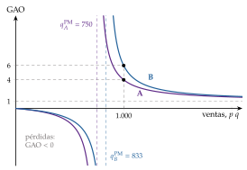
Fuente: elaboración propia. Empresa A: costes fijos de 300 y margen de contribución del 40 % de las ventas; empresa B: costes fijos de 500 y margen del 60 %.
c) Extensiones
El margen de seguridad: la distancia relativa entre las ventas y el punto muerto, \((q-q^{\mathrm{PM}})/q\), es la inversa del GAO. En el ejemplo, \((1.000-750)/1.000=25~\%=1/4\): las ventas pueden caer un 25 % antes de entrar en pérdidas.
Varios productos: con más de un producto, el punto muerto se calcula con el margen de contribución medio, ponderado por la composición de las ventas.
d) Valoración
Es sencillo y muy útil para decidir (precios, inversión en automatización, subcontratar), pero la división entre costes fijos y variables depende del plazo: a largo plazo todos los costes son variables, y una empresa incapaz de ajustar sus costes no es viable; en el muy corto plazo, casi todos son fijos.
Supone precios y costes unitarios constantes, algo que solo vale en un intervalo de ventas.
Un riesgo económico alto exige una financiación más prudente: con mucho apalancamiento operativo, añadir deuda multiplica el riesgo, y la empresa paga más por financiarse.
III.3.2. Análisis financiero
Margen neto y rentabilidad financiera
El margen neto, \(\mathrm{BN}/\text{ventas}\), añade al margen operativo el resultado financiero y los impuestos. En el ejemplo, el 6 %.
La rentabilidad financiera (ROE, return on equity) mide lo que rinden los fondos de los accionistas, después de intereses e impuestos: \(\mathrm{ROE}\equiv\mathrm{BN}/\mathrm{PN}\). En el ejemplo, \(60/600=10~\%\).
El apalancamiento financiero: la relación entre el ROE y el ROA
a) Idea
¿Le conviene al accionista que la empresa se endeude? Depende de si cada euro de deuda rinde en el activo más de lo que cuesta. Es la versión contable y ex post de una pregunta central de las finanzas de la empresa [ver tema 3.B.3].
b) Modelo
i) Supuestos:
el activo se financia con deuda con coste, \(V_D\), que cuesta \(r_D\) (gastos financieros sobre deuda), y con patrimonio neto, \(V_E\), los 2 a valor contable: \(AT=V_D+V_E\);
el impuesto sobre beneficios es proporcional, al tipo \(t_{IS}\).
ii) Desarrollo, en 3 pasos (derivación completa en el anexo B):
el resultado de explotación: el activo rinde el ROA, así que \(\mathrm{EBIT}=\mathrm{ROA}\,(V_D+V_E)\);
el beneficio neto: lo que queda tras pagar los intereses y el impuesto, \(\mathrm{BN}=(\mathrm{EBIT}-r_D\,V_D)(1-t_{IS})\);
la rentabilidad del accionista: dividiendo por \(V_E\),
\[\mathrm{ROE}=\Big[\mathrm{ROA}+\frac{V_D}{V_E}\,(\mathrm{ROA}-r_D)\Big](1-t_{IS})\tag{3}\]
iii) Implicaciones (gráfico 3):
si \(\mathrm{ROA}>r_D\), cada euro de deuda rinde más de lo que cuesta y la diferencia va al accionista: endeudarse sube el ROE. Es el apalancamiento financiero o efecto palanca. Si \(\mathrm{ROA}<r_D\), la palanca juega en contra;
sin deuda, \(\mathrm{ROE}=\mathrm{ROA}\,(1-t_{IS})\);
la deuda también amplifica las variaciones del ROA: la recta del ROE es más inclinada cuanto mayor es el endeudamiento;
en la empresa del ejemplo, con un ROA del 10 %, 400 de deuda al 5 % y 600 de patrimonio neto, \(\mathrm{ROE}=[0{,}10+\tfrac{2}{3}\,(0{,}10-0{,}05)]\cdot0{,}75=10~\%\), más que el 7,5 % que tendría sin deuda. Si la deuda costara un 12,5 %, el ROE caería al 6,25 %.
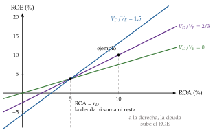
Fuente: elaboración propia con la ecuación (3), \(r_D=5~\%\) y \(t_{IS}=25~\%\).
c) Extensiones
El grado de apalancamiento financiero: los intereses son un coste fijo financiero que amplifica en el beneficio neto las variaciones del EBIT, igual que los costes fijos amplifican las de las ventas en el EBIT. El GAF mide cuánto varía en porcentaje el beneficio neto cuando el EBIT varía un 1 %; como el impuesto proporcional se cancela, \[\mathrm{GAF}\equiv\frac{\Delta\mathrm{BN}/\mathrm{BN}}{\Delta\mathrm{EBIT}/\mathrm{EBIT}}=\frac{\mathrm{EBIT}}{\mathrm{EBIT}-\text{intereses}}=\frac{\mathrm{EBIT}}{\mathrm{EBT}}.\]
El apalancamiento total, \(\mathrm{GAT}=\mathrm{GAO}\cdot\mathrm{GAF}=\mathrm{MC}/\mathrm{EBT}\), mide cuánto varía el beneficio neto con las ventas.
En el ejemplo, \(\mathrm{GAF}=100/80=1{,}25\) y \(\mathrm{GAT}=4\cdot1{,}25=5\): si las ventas suben un 10 %, el beneficio neto sube un 50 %.
La teoría: es la versión contable de la proposición II de Franco Modigliani y Merton Miller (1958), \(r_E=r_A+(r_A-r_D)\,V_D/V_E\): con mercados perfectos, la mayor rentabilidad esperada del accionista compensa exactamente su mayor riesgo, y el valor de la empresa no depende de cómo se financie [ver tema 3.B.3].28 Por eso la beta de las acciones sube con la deuda [ver tema 3.B.2].
El umbral: que el ROE supere al ROA no basta; tiene que superar el coste de los fondos propios, \(r_E\), la rentabilidad que exigen los accionistas por su riesgo [ver tema 3.B.2].
d) Evidencia empírica
La Central de Balances del Banco de España publica cada año la rentabilidad del activo neto (R.1), el coste de la financiación con coste (R.2) y su diferencia: es exactamente el término \(\mathrm{ROA}-r_D\) de (3). Cuando es positiva, la rentabilidad de los recursos propios supera a la del activo, y la deuda empuja al alza la rentabilidad de las empresas españolas [ver tema 4.A.8].
El efecto también tiene un lado macroeconómico: si muchas empresas se endeudan a la vez confiando en que el ROA seguirá por encima del coste de la deuda, la economía se vuelve frágil ante una subida de tipos o una caída de las ventas, como describe la hipótesis de inestabilidad financiera de Hyman Minsky [ver tema 3.A.42].
e) Valoración
A favor: resume en una línea la relación entre la decisión de inversión (el ROA) y la de financiación (el endeudamiento y su coste), y es exacta con las cifras contables.
En contra:
es una identidad ex post: no dice si el ROA futuro superará al coste de la deuda;
supone que todo el pasivo tiene coste; con pasivo sin coste, como los proveedores, el ROA hay que calcularlo sobre el activo neto;
\(r_D\) no es constante: sube con el endeudamiento, porque crece el riesgo de insolvencia;
y mira solo la rentabilidad, no el riesgo: la deuda es un arma de doble filo, que amplifica tanto las ganancias como las pérdidas.
Indicadores de mercado
Si la empresa cotiza, sus cuentas se comparan con el precio de sus acciones, \(P\):
el beneficio por acción, BPA, el resultado del ejercicio entre el número de acciones;
el PER (price-earnings ratio), \(P/\mathrm{BPA}\): cuántas veces se paga en bolsa el beneficio anual;
la rentabilidad por dividendo, el dividendo por acción entre el precio, y el pay-out, los dividendos entre el beneficio, \(1-b\), con \(b\) la tasa de retención;
y el precio sobre valor contable (price to book), \(P\) entre el patrimonio neto por acción, que es igual a \(\mathrm{PER}\cdot\mathrm{ROE}\): un precio por encima del valor contable lo justifica una rentabilidad financiera alta o un crecimiento esperado alto.
Un PER alto no significa por sí solo que la acción esté cara: refleja crecimiento esperado y poco riesgo. Son la base de la valoración por múltiplos y del análisis fundamental de las acciones [ver tema 3.B.4] [ver tema 3.B.23].
III.3.3. La descomposición de DuPont: del ROA al ROE
a) Idea
¿De dónde sale la rentabilidad del accionista? La descomposición de DuPont, que debe su nombre a la empresa química estadounidense en la que se empezó a usar a principios del siglo XX, escribe el ROE como un producto de ratios, cada una ligada a una decisión de la empresa. Une en una sola cifra el análisis económico y el financiero.
b) Modelo
i) Supuestos
Ninguno de comportamiento: es una identidad contable, que se obtiene multiplicando y dividiendo el ROE por las mismas magnitudes. Solo exige que el EBIT, el EBT y las ventas sean distintos de cero.
ii) Desarrollo
La versión de 3 factores: multiplicando y dividiendo por las ventas y por el activo total, \[\mathrm{ROE}=\underbrace{\frac{\mathrm{BN}}{\text{ventas}}}_{\text{margen neto}}\cdot\underbrace{\frac{\text{ventas}}{AT}}_{\text{rotación}}\cdot\underbrace{\frac{AT}{\mathrm{PN}}}_{\text{apalancamiento}}.\]
La versión de 5 factores: separando en el margen neto lo que es del negocio, lo que es de la financiación y lo que es del fisco (figura 9),
\[\mathrm{ROE}=\underbrace{\frac{\mathrm{BN}}{\mathrm{EBT}}}_{\text{efecto fiscal}}\cdot\underbrace{\frac{\mathrm{EBT}}{\mathrm{EBIT}}}_{\text{efecto de los intereses}}\cdot\underbrace{\frac{\mathrm{EBIT}}{\text{ventas}}\cdot\frac{\text{ventas}}{AT}}_{\mathrm{ROA}}\cdot\underbrace{\frac{AT}{\mathrm{PN}}}_{\text{apalancamiento}}\tag{4}\]
iii) Implicaciones
Los 2 factores centrales son el ROA (2), el análisis económico: la gestión del negocio, con sus precios, sus costes y el uso de sus activos.
Los otros 3 son el análisis financiero: cuánto se queda el fisco, \(1-t_{IS}\) con un impuesto proporcional; cuánto se quedan los acreedores, \(\mathrm{EBT}/\mathrm{EBIT}=1/\mathrm{GAF}\), que baja al endeudarse; y cuánto multiplica la deuda, \(AT/\mathrm{PN}\), que sube al endeudarse.
La deuda mejora el ROE solo si gana el segundo efecto: el producto \((\mathrm{EBT}/\mathrm{EBIT})\cdot(AT/\mathrm{PN})\) es mayor que 1 si y solo si el ROA supera al coste de la deuda, la misma condición que en (3).
En la empresa del ejemplo: \(0{,}75\cdot0{,}8\cdot0{,}10\cdot1\cdot\tfrac{5}{3}=10~\%\). El efecto de los intereses por el apalancamiento da \(0{,}8\cdot\tfrac53\simeq1{,}33\), mayor que 1: la deuda le suma rentabilidad.
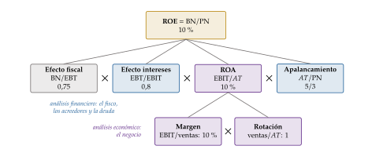
Fuente: elaboración propia a partir de Penman (2013).
c) Extensiones
El crecimiento sostenible: con el ROE así descompuesto se calcula la tasa a la que puede crecer la empresa sin cambiar su endeudamiento ni ampliar capital, \(g^*=b\cdot\mathrm{ROE}\), con \(b\) la tasa de retención de beneficios [ver tema 3.B.4].
La reformulación operativa y financiera: los análisis modernos separan el balance en activos operativos netos y deuda financiera neta, y descomponen el ROE en la rentabilidad de las operaciones más el diferencial con el coste de la deuda neta, por el apalancamiento financiero neto.
d) Valoración
A favor: ordena el diagnóstico (dice si un ROE bajo es un problema de precios, de uso de los activos, de deuda o de impuestos) y permite comparar empresas y sectores con estrategias distintas.
En contra: es contable e histórica, hereda todos los límites de las ratios y no dice nada del riesgo: un ROE alto conseguido con mucha deuda no es lo mismo que uno conseguido con mucho margen.
Recapitulación: liquidez, solvencia y rentabilidad responden a 3 preguntas distintas, pero la rentabilidad las sostiene, y DuPont la explica entera.
Conclusión
Recapitulación:
En conclusión, la información financiera existe porque quien gestiona la empresa sabe más que quien la financia; las normas, del IASB al Plan General de Contabilidad, la hacen relevante, fiable, íntegra, comparable y clara.
El balance es su estado de situación; la cuenta de pérdidas y ganancias, el estado de cambios en el patrimonio neto y el de flujos de efectivo, sus estados de circulación, y la memoria los explica.
El análisis los convierte en 3 respuestas: si la empresa puede pagar mañana (liquidez), si puede pagarlo todo (solvencia) y si rinde más de lo que cuesta su dinero (rentabilidad), con la descomposición del ROE como síntesis.
Relevancia:
Con esas cifras deciden los bancos a quién prestar, los inversores qué comprar, Hacienda cuánto recaudar y los supervisores qué riesgos vigilar en el conjunto de las empresas [ver tema 4.A.8].
Extensiones:
La transparencia fiscal: desde los ejercicios iniciados a partir del 22 de junio de 2024, los grupos que facturan más de 750 millones de euros publican, país por país, sus ingresos, beneficios e impuestos. Como se aprobó como norma contable y no fiscal, bastó la mayoría cualificada [ver tema 4.B.18].
La información de sostenibilidad, que se suma a la financiera aunque la Unión ha recortado su alcance [ver tema 3.B.31].
El uso de las cifras contables para valorar empresas y acciones [ver tema 3.B.4] [ver tema 3.B.23], y para predecir las crisis de las empresas [ver tema 3.B.26].
Opinión:
La armonización ha hecho comparables las cuentas, pero la información sigue sujeta a un grado de discrecionalidad que modulan los incentivos de quien la prepara. Ni el informe del auditor basta: hace falta el examen crítico y desagregado del analista, y su capacidad de llegar a una opinión acertada es la que da utilidad a la información.
Idea final:
El papel lo aguanta todo; el análisis, no. Cuando el beneficio no se convierte en caja ni la caja en solvencia, las ratios lo cuentan antes de que se hunda el balance.
A. Anexo: resumen de ratios
Los valores de referencia son orientativos: dependen del sector y del modelo de negocio. Una relación positiva (+) indica que cuanto mayor es la ratio, mejor es la situación de la empresa; una negativa (\(-\)), lo contrario.
| Nombre | Definición | Rel. | Referencia | Alerta |
|---|---|---|---|---|
| Fondo de maniobra | \(\mathrm{AC}-\mathrm{PC}=(\mathrm{PN}+\mathrm{PNC})-\mathrm{ANC}\) | + | \(>0\) | \(<0\), salvo en algunos sectores |
| Liquidez general | \(\mathrm{AC}/\mathrm{PC}\) | + | A partir de 1,5 | \(<1\), salvo en algunos sectores |
| Prueba ácida | \((\mathrm{AC}-\text{existencias}-\text{ANC mantenidos para la venta})/\allowbreak \mathrm{PC}\) | + | A partir de 1 | \(<0{,}5\), salvo en algunos sectores |
| Tesorería | \(\text{efectivo y equivalentes}/\allowbreak \mathrm{PC}\) | + | Pequeña, si se gestiona bien | Casi 0 |
| Coeficiente básico de financiación | \((\mathrm{PN}+\mathrm{PNC})/(\mathrm{ANC}+\mathrm{NOF})\) | + | 1 | \(<1\) |
| Capacidad de devolución de la deuda bancaria | \(\text{deuda bancaria}/\allowbreak \text{recursos generados}\) | \(-\) | Cuanto más baja, mejor | Grande o negativa |
| Capacidad de devolución del pasivo | \(\text{pasivo}/\allowbreak \text{recursos generados}\) | \(-\) | Cuanto más baja, mejor | Grande o negativa |
| Conversión del activo en efectivo | \(\text{recursos generados}/\allowbreak AT\) | + | Cuanto más alta, mejor | Pequeña o negativa |
Fuente: elaboración propia a partir de Garrido Miralles y Íñiguez Sánchez (2017). Los recursos generados por las operaciones son el resultado del ejercicio más las amortizaciones, los deterioros y las provisiones.
| Nombre | Definición | Rel. | Referencia | Alerta |
|---|---|---|---|---|
| Solvencia o garantía | \(AT/\allowbreak \text{pasivo}\) | + | En torno a 2 (más de 1,5) | \(<1\) |
| Autonomía financiera | \(\mathrm{PN}/\allowbreak \text{pasivo}\) | + | Entre 0,7 y 1,5 | \(<0{,}3\) |
| Financiación propia | \(\mathrm{PN}/AT\) | + | Según el sector | Baja o negativa |
| Firmeza | \(\mathrm{ANC}/\mathrm{PNC}\) | + | 2 | \(<1{,}25\) |
| Solidez | \(\mathrm{PN}/\mathrm{ANC}\) | + | 0,5 | \(<0{,}25\) |
| Estabilidad | \((\mathrm{PN}+\mathrm{PNC})/\mathrm{ANC}\) | + | 1 | \(<0{,}5\) |
| Endeudamiento | \(\text{pasivo}/\allowbreak \mathrm{PN}\) (con deuda con coste, \(V_D/V_E\)) | \(-\) | En torno a 1 | \(>2{,}5\) |
| Endeudamiento bancario | \(\text{deudas bancarias}/\allowbreak \mathrm{PN}\) | \(-\) | Hasta 1 | \(>1{,}75\) |
| Deuda neta sobre EBITDA | \((\text{deuda financiera}-\text{efectivo e inversiones a corto})/\allowbreak \mathrm{EBITDA}\) | \(-\) | Según el sector | Alta |
| Cobertura de intereses | \(\mathrm{EBIT}/\allowbreak \text{gastos financieros}\) | + | Más de 3 | \(<1\) |
| Capitalización del periodo | \(\text{autofinanciación del ejercicio}/\allowbreak \text{resultado}\) | + | Cerca de 1 | 0 |
Fuente: elaboración propia a partir de Garrido Miralles y Íñiguez Sánchez (2017). El manual define también los porcentajes de deuda a largo y a corto plazo sobre el pasivo total (que suman el 100 %): lo deseable es que domine la deuda a largo.
| Nombre | Definición | Rel. | Referencia | Alerta |
|---|---|---|---|---|
| Rentabilidad económica (ROA) | \(\mathrm{EBIT}/AT\) | + | Más del 10 % es excelente | \(<0\) |
| Rentabilidad financiera antes de impuestos | \(\mathrm{EBT}/\mathrm{PN}\) | + | Más del 15 % es excelente | \(<0\) |
| Rentabilidad financiera (ROE) | \(\mathrm{BN}/\mathrm{PN}\) | + | Más del 10 % es excelente | \(<0\) |
| Margen operativo | \(\mathrm{EBIT}/\allowbreak \text{ventas}\) | + | Más del 5 % es excelente | \(<0\) |
| Rotación del activo | \(\text{ventas}/\allowbreak AT\) | + | Más de 1 es excelente | Pequeña |
| Apalancamiento financiero | \((\mathrm{EBT}/\mathrm{PN})/(\mathrm{EBIT}/AT)=(\mathrm{EBT}/\mathrm{EBIT})\cdot(AT/\mathrm{PN})\) | + | \(>1\) | \(<1\) |
| Coste medio de la deuda | \(\text{gastos financieros}/\allowbreak \text{deuda con coste}\) | \(-\) | Menor que el ROA | Alto |
| Gastos financieros sobre ventas | \(\text{gastos financieros}/\allowbreak \text{ventas}\) | \(-\) | Lo más bajo posible | Alto |
| Evolución de las ventas | \(\text{ventas}_t/\allowbreak \text{ventas}_{t-1}\) | + | \(>1\) | \(<0{,}75\) |
| Recursos generados sobre ventas | \(\text{recursos generados}/\allowbreak \text{ventas}\) | + | Lo más alto posible | Bajos o negativos |
Fuente: elaboración propia a partir de Garrido Miralles y Íñiguez Sánchez (2017). El manual calcula la rentabilidad económica y el margen con el resultado antes de intereses e impuestos, que incluye los ingresos financieros, y el coste medio de la deuda sobre todo el pasivo; aquí, como en el resto del temario, con el EBIT y con la deuda con coste.
| Nombre | Definición | Rel. | Referencia | Alerta |
|---|---|---|---|---|
| Beneficio por acción (BPA) | \(\text{resultado del ejercicio}/\allowbreak \text{número de acciones}\) | + | Lo más alto posible | Muy bajo o negativo |
| Dividendo por acción | \(\text{dividendo}/\allowbreak \text{número de acciones}\) | — | — | |
| Cash flow por acción | \(\text{flujo de caja}/\allowbreak \text{número de acciones}\) | + | Lo más alto posible | Muy bajo o negativo |
| Pay-out | \(\text{dividendos}/\allowbreak \text{resultado del ejercicio}\) | — | — | |
| PER | \(P/\mathrm{BPA}\) | * | Positivo | Negativo (pérdidas) |
| Precio sobre valor contable | \(P/\allowbreak \text{valor contable por acción}=\mathrm{PER}\cdot\mathrm{ROE}\) | * | Positivo | Negativo |
| Precio sobre flujo de caja | \(P/\allowbreak \text{flujo de caja por acción}\) | * | Positivo | Negativo |
| Rentabilidad por dividendo | \(\text{dividendo por acción}/\allowbreak P\) | — | — |
Fuente: elaboración propia a partir de Garrido Miralles y Íñiguez Sánchez (2017). *: valores altos indican acciones caras en el mercado, y valores bajos, baratas, pero también reflejan el crecimiento esperado y el riesgo.
B. Anexo: derivaciones
B.1. La relación entre el ROE y el ROA
Con valores contables y sin pasivo sin coste, el activo es \(AT=V_D+V_E\), y el resultado de explotación, \(\mathrm{EBIT}=\mathrm{ROA}\cdot(V_D+V_E)\).
El beneficio neto es lo que queda tras pagar los intereses, \(r_D\,V_D\), y el impuesto: \[\mathrm{BN}=\big[\mathrm{ROA}\,(V_D+V_E)-r_D\,V_D\big](1-t_{IS})=\big[\mathrm{ROA}\,V_E+(\mathrm{ROA}-r_D)\,V_D\big](1-t_{IS}).\]
Dividiendo por \(V_E\) se obtiene (3). ∎
Si hay pasivo sin coste, \(P_{sc}\) (proveedores, provisiones), con \(AT=V_D+V_E+P_{sc}\), la misma cuenta da \(\mathrm{ROE}=\big[\mathrm{ROA}\,(1+P_{sc}/V_E)+(V_D/V_E)(\mathrm{ROA}-r_D)\big](1-t_{IS})\): el pasivo sin coste es deuda a tipo cero, que también apalanca. Por eso la Central de Balances calcula la rentabilidad sobre el activo neto, \(AT-P_{sc}\).
B.2. El efecto de los intereses y el apalancamiento en DuPont
Con todo el pasivo con coste, los intereses son \(I=r_D\,(AT-\mathrm{PN})\). Entonces \[\frac{\mathrm{EBT}}{\mathrm{EBIT}}\cdot\frac{AT}{\mathrm{PN}}>1\iff(\mathrm{EBIT}-I)\,AT>\mathrm{EBIT}\cdot\mathrm{PN}\iff\mathrm{EBIT}\,(AT-\mathrm{PN})>I\cdot AT\iff\frac{\mathrm{EBIT}}{AT}>\frac{I}{AT-\mathrm{PN}}=r_D.\]
Es decir, el producto de los 2 factores financieros de (4) supera 1 si y solo si \(\mathrm{ROA}>r_D\), la condición del apalancamiento financiero positivo. ∎
B.3. Las necesidades operativas de fondos en días
Despejando cada partida operativa de la definición de su periodo medio: \[\text{existencias}=\frac{\text{coste de las ventas}}{360}\,\mathrm{PMA},\qquad \text{clientes}=\frac{\text{ventas}}{360}\,\mathrm{PMC},\qquad \text{proveedores}=\frac{\text{compras}}{360}\,\mathrm{PMP}.\]
Si las únicas partidas operativas son esas 3, las NOF son \[\mathrm{NOF}\simeq\frac{\text{coste de las ventas}}{360}\,\mathrm{PMA}+\frac{\text{ventas}}{360}\,\mathrm{PMC}-\frac{\text{compras}}{360}\,\mathrm{PMP}.\]
Si el coste de las ventas y las compras se miden a precio de venta (o el margen es pequeño), \(\mathrm{NOF}\simeq(\text{ventas}/360)\cdot(\mathrm{PMA}+\mathrm{PMC}-\mathrm{PMP})\): las ventas diarias por el periodo medio de maduración financiero. ∎
B.4. El grado de apalancamiento operativo y el margen de seguridad
Con \(\mathrm{EBIT}=(p-c)\,q-\mathrm{CF}\) y \(q^{\mathrm{PM}}=\mathrm{CF}/(p-c)\), el EBIT es \((p-c)\,(q-q^{\mathrm{PM}})\), y \[\mathrm{GAO}=\frac{(p-c)\,q}{(p-c)\,(q-q^{\mathrm{PM}})}=\frac{q}{q-q^{\mathrm{PM}}}=\frac{1}{\text{margen de seguridad}}.\]
El GAO tiende a infinito cuando \(q\to q^{\mathrm{PM}}\), es negativo si \(q<q^{\mathrm{PM}}\) y tiende a 1 cuando \(q\to\infty\). ∎
C. Anexo: los 10 criterios de valoración del PGC
Coste histórico: el precio de adquisición del activo, si se compró, o su coste de producción, si lo produjo la empresa.
Valor razonable: el precio que se recibiría por vender un activo o se pagaría por transferir o cancelar un pasivo en una transacción ordenada entre participantes en el mercado, en la fecha de valoración. Se estima con una jerarquía de 3 niveles: precios cotizados de activos idénticos en mercados activos; otros datos observables, y, en último lugar, datos no observables.
Valor neto realizable: lo que la empresa puede obtener al vender el activo en el curso normal del negocio, menos los costes estimados de venderlo y, en las materias primas y productos en curso, de terminarlo.
Valor actual: los flujos de efectivo que se van a recibir o pagar en el curso normal del negocio, descontados a un tipo adecuado.
Valor en uso: el valor actual de los flujos de efectivo que se esperan del uso del activo (o de una unidad generadora de efectivo) y, en su caso, de su venta, descontados a un tipo sin riesgo ajustado por los riesgos del activo que no recojan los flujos. Las proyecciones se basan en hipótesis razonables, con probabilidades si hay incertidumbre.
Costes de venta: los costes incrementales directamente atribuibles a vender un activo, en los que no se habría incurrido sin la decisión de venderlo, salvo los gastos financieros y el impuesto sobre beneficios; incluyen los gastos legales de transmitir la propiedad y las comisiones de venta.
Coste amortizado: el valor inicial de un instrumento financiero menos los reembolsos del principal, más o menos la parte imputada a resultados, con el tipo de interés efectivo, de la diferencia entre el valor inicial y el de reembolso, y, en los activos, menos los deterioros reconocidos.
Costes de transacción de un activo o pasivo financiero: los incrementales directamente atribuibles a comprarlo, emitirlo o venderlo (honorarios y comisiones de agentes, asesores e intermediarios, gastos de fedatario público, impuestos sobre la transacción), sin primas ni descuentos, gastos financieros ni costes internos.
Valor contable o en libros: el importe neto por el que un activo o pasivo figura en el balance, deducidas, en los activos, la amortización acumulada y los deterioros.
Valor residual: lo que la empresa podría obtener hoy al vender el activo, menos los costes de venta, si tuviera ya la antigüedad y el estado esperados al final de su vida útil.
D. Anexo: el ciclo contable
La Ley de Sociedades de Capital fija las fases por las que pasan las cuentas anuales:
Formulación: los administradores formulan las cuentas anuales, el informe de gestión y la propuesta de aplicación del resultado en los 3 meses siguientes al cierre del ejercicio, que dura 12 meses salvo en la constitución, el cambio de la fecha de cierre o la disolución, y las firman todos ellos.
Auditoría, cuando es obligatoria: el auditor revisa las cuentas y el informe de gestión y emite su informe antes de la junta.
Aprobación: la junta general ordinaria se reúne en los 6 primeros meses de cada ejercicio para aprobar la gestión social, las cuentas del ejercicio anterior y la aplicación del resultado. Las cuentas consolidadas se aprueban a la vez que las de la sociedad dominante.
Depósito: en el mes siguiente a la aprobación, en el Registro Mercantil del domicilio social, donde cualquiera puede consultarlas.
E. Anexo: empresas según su forma jurídica
| Forma | Socios | Responsabilidad | Capital mínimo | Norma y fiscalidad |
|---|---|---|---|---|
| Empresa individual (personalidad física) | ||||
| Empresario individual | 1 | Ilimitada | No hay | Código de Comercio y Código Civil; IRPF |
| Comunidad de bienes | Al menos 2 comuneros | Ilimitada | No hay (se aportan bienes) | Código Civil; IRPF de los comuneros |
| Sociedades mercantiles personalistas (personalidad jurídica) | ||||
| Sociedad colectiva | Al menos 2 | Personal, solidaria e ilimitada | No hay | Código de Comercio; impuesto sobre sociedades |
| Sociedad comanditaria simple | Al menos 2 (1 colectivo y 1 comanditario) | Ilimitada la de los colectivos; limitada la de los comanditarios | No hay | Código de Comercio; impuesto sobre sociedades |
| Sociedades de capital | ||||
| Sociedad de responsabilidad limitada | 1 o más (unipersonal) | Limitada al capital aportado | 1 euro desde 2022; por debajo de 3.000 euros, reserva legal del 20 % del beneficio y responsabilidad solidaria de los socios hasta 3.000 en la liquidación | Ley de Sociedades de Capital; impuesto sobre sociedades |
| Sociedad anónima | 1 o más (unipersonal) | Limitada al capital aportado | 60.000 euros, desembolsado al menos en un 25 % | Ley de Sociedades de Capital; impuesto sobre sociedades |
| Sociedad comanditaria por acciones | Al menos 1 colectivo y comanditarios | Ilimitada la de los socios administradores; limitada la del resto | Como la anónima | Ley de Sociedades de Capital; impuesto sobre sociedades |
| Sociedades mercantiles especiales | ||||
| Cooperativa | 3 en las de primer grado; 2 cooperativas en las de segundo | Limitada a lo aportado (salvo que los estatutos digan otra cosa) | El que fijen los estatutos | Ley 27/1999 y leyes autonómicas; al menos el 20 % de los excedentes al fondo de reserva obligatorio y el 5 % al de educación y promoción |
| Sociedad laboral (limitada o anónima) | La mayoría del capital, de trabajadores indefinidos | Limitada al capital aportado | El de la limitada o la anónima | Ley 44/2015; ningún socio con más de un tercio del capital, con excepciones |
Fuente: elaboración propia a partir de la Ley de Sociedades de Capital, la Ley 18/2022, la Ley 27/1999 y la Ley 44/2015. La sociedad limitada nueva empresa desapareció con la Ley 18/2022.
F. Anexo: preguntas de test
Preguntas tipo test del primer ejercicio: simulador de test.
Bibliografía
Los usuarios internos están vinculados de forma directa y permanente con la empresa que elabora la información y pertenecen a ella, porque la gestionan, trabajan en ella o son sus accionistas. Los usuarios externos no pertenecen a la empresa, pero se relacionan con ella de forma permanente o esporádica, o tienen con ella una vinculación indirecta.↩︎
Milton Friedman recibió el Premio Nobel de Economía en 1976 «por sus logros en el análisis del consumo, la historia y la teoría monetarias y por demostrar la complejidad de la política de estabilización». Para crear valor, la empresa tiene que cumplir 3 objetivos: el de liquidez, que sus activos generen efectivo a tiempo; el de solvencia, poder hacer frente a todas sus obligaciones, y el de rentabilidad, que sus inversiones rindan más de lo que cuesta financiarlas.↩︎
No toda la contabilidad se justifica por la información asimétrica: la contabilidad de gestión es para los propios directivos, y no tiene sentido que el Estado la fiscalice.↩︎
Las entidades financieras tienen normas contables propias, adaptadas a su balance: las entidades de crédito, la Circular 4/2017 del Banco de España; las instituciones de inversión colectiva, una circular de la Comisión Nacional del Mercado de Valores (CNMV), y las aseguradoras, su propio plan de contabilidad. Sus indicadores también son otros: el ROA bancario, por ejemplo, es el resultado neto sobre el activo total medio, no el resultado de explotación sobre el activo de (2) [ver tema 4.A.19].↩︎
George Akerlof recibió el Premio Nobel de Economía en 2001, con Michael Spence y Joseph Stiglitz, «por sus análisis de los mercados con información asimétrica».↩︎
La contabilidad es derecho mercantil: la rama del ordenamiento jurídico que regula, dentro del derecho patrimonial privado, el estatuto de los empresarios mercantiles y los mercados en los que se negocian los bienes y servicios fruto de su actividad.↩︎
Como en otras estadísticas económicas, la contabilidad nacional [ver tema 3.A.30] y la balanza de pagos [ver tema 3.B.11], las normas comunes buscan que la información sea homogénea y comparable.↩︎
El IASB depende de la Fundación IFRS, una organización privada sin ánimo de lucro que desde 2021 supervisa también al Consejo de Normas Internacionales de Sostenibilidad (International Sustainability Standards Board, ISSB). Este publicó en junio de 2023 sus 2 primeras normas de información sobre sostenibilidad, NIIF S1 (requisitos generales) y NIIF S2 (clima).↩︎
En Estados Unidos, las empresas cotizadas aplican los principios contables generalmente aceptados (US GAAP), que emite un organismo privado, el Financial Accounting Standards Board (FASB), y exige la Securities and Exchange Commission (SEC); a los emisores extranjeros la SEC les acepta las NIIF desde 2007. La tradición anglosajona confía la norma a organismos profesionales y da más peso al criterio del profesional y a la jurisprudencia; la continental (Alemania, Francia, Italia, España), a la ley, y por eso la contabilidad está en el Código de Comercio y en reales decretos.↩︎
El primer Plan General de Contabilidad es de 1973 y era voluntario. La entrada en la Comunidad Económica Europea obligó a adaptar la legislación mercantil a las directivas: Ley de Auditoría de Cuentas de 1988, Ley 19/1989 de reforma de la legislación mercantil y PGC de 1990, ya obligatorio, con normas de consolidación en 1991. Cuando la Unión adoptó las NIIF para las cotizadas, España optó por no imponerlas en las cuentas individuales y adaptar a ellas su propia norma: la Ley 16/2007 reformó el Código de Comercio y el Real Decreto 1514/2007 aprobó el PGC vigente, que se aplica desde el 1 de enero de 2008 (figura 1).↩︎
Es el mismo principio que usa la contabilidad nacional, que para los impuestos admite la caja ajustada en el tiempo [ver tema 3.A.30]. La caja propiamente dicha se recoge en el estado de flujos de efectivo.↩︎
En las existencias, cuando los bienes son intercambiables y no se puede identificar el coste de cada uno, el PGC adopta con carácter general el precio medio o coste medio ponderado y acepta el FIFO (first in, first out: sale primero lo que entró primero), pero no el LIFO. Con precios al alza, el FIFO valora las existencias finales a precios recientes y da un resultado mayor que el precio medio. Es además el criterio logístico natural de los productos perecederos, como explica esta página sobre el método FIFO.↩︎
Pueden formular balance y memoria abreviados las sociedades que durante 2 ejercicios consecutivos no superen 2 de estos 3 límites: 4 millones de euros de activo, 8 millones de cifra de negocios y 50 trabajadores de media; y cuenta de pérdidas y ganancias abreviada, las que no superen 11,4 millones, 22,8 millones y 250 trabajadores. Quien puede formular balance abreviado no está obligado a presentar el estado de cambios en el patrimonio neto ni el de flujos de efectivo. La auditoría tiene límites propios, más bajos: se libran de ella las que no superen 2 de estos 3: 2,85 millones de activo, 5,7 millones de cifra de negocios y 50 trabajadores. Una empresa con 3,5 millones de activo y 7 de ventas formula balance abreviado y tiene que auditarse. La Directiva Delegada (UE) 2023/2775 subió un 25 % los umbrales europeos de tamaño para compensar la inflación, pero España no la ha traspuesto: el proyecto de ley decayó con la disolución de las Cortes en octubre de 2026.↩︎
Una patente es el derecho exclusivo, concedido por un Estado, a explotar un invento durante un tiempo a cambio de divulgarlo. Una marca es el signo con que se identifica en el mercado un producto o servicio. El fondo de comercio es el valor de la clientela, la organización, el prestigio o la experiencia, que hacen que una empresa valga más que la suma de sus activos; solo se registra cuando se paga, al comprar una empresa. Desde 2016 se amortiza durante su vida útil, que se presume de 10 años salvo prueba en contrario, además de comprobarse cada año si se ha deteriorado; en las NIIF no se amortiza: solo se comprueba su deterioro.↩︎
Al revés, si un incendio destruye un almacén que no estaba asegurado, el patrimonio neto baja, pero el efectivo no cambia.↩︎
El IVA no es, en general, ni gasto ni ingreso: el que la empresa soporta y puede deducir es un derecho frente a Hacienda y el que repercute a sus clientes, una deuda. Solo el IVA no deducible se suma al coste de lo que se compra. Los tributos que sí son gasto de explotación, como el impuesto sobre bienes inmuebles o el de actividades económicas, van en «otros gastos de explotación», y el impuesto sobre sociedades, en «impuestos sobre beneficios», por debajo del resultado antes de impuestos.↩︎
En inglés, depreciation es la pérdida sistemática de valor del inmovilizado material y amortization, la del intangible. El PGC llama a las 2 amortización y reserva deterioro para las pérdidas de valor no sistemáticas, que pueden revertir. Que se registren no es una consecuencia de la prudencia, sino del devengo: el coste del activo se reparte entre los ejercicios en que se usa. Son gastos que no son pagos.↩︎
Una actividad interrumpida es un componente de la empresa que se ha enajenado o se ha clasificado como mantenido para la venta y que representa una línea de negocio o un área geográfica significativa y separable, forma parte de un plan para enajenarla o es una dependiente adquirida solo para venderla.↩︎
Con las partidas de la cuenta de pérdidas y ganancias: el consumo de materias primas son las compras más o menos la variación de sus existencias; el coste de la producción, el consumo más la mano de obra y los demás costes de fabricación, y el coste de las ventas, el coste de la producción más o menos la variación de existencias de productos terminados y en curso.↩︎
Por eso el EFE depende menos de los criterios contables que el resultado: el método de amortización o de valoración de las existencias cambia el beneficio, pero no la caja.↩︎
La opinión puede ser favorable, con salvedades, desfavorable o denegada. Para que sea independiente, la ley impide auditar a quien preste a la entidad servicios que amenacen su independencia, como llevarle la contabilidad o ciertos servicios de consultoría, y en las entidades de interés público prohíbe una lista de servicios distintos de la auditoría y obliga a rotar al auditor: quien asesora a una empresa y vive de ella no puede juzgar después con imparcialidad sus cuentas.↩︎
Una explicación en vídeo de estas medidas, en «Ratios de balance», del curso Finanzas para no financieros.↩︎
Las NOF también se llaman inversión neta en circulante, capital circulante operativo o fondo de maniobra operativo (working capital requirements).↩︎
Se usa el año comercial de 360 días; con 365, las cifras apenas cambian. En una empresa industrial, el periodo de almacén se divide en el de las materias primas (sobre su consumo), el de fabricación (productos en curso sobre el coste de la producción) y el de venta (productos terminados sobre el coste de las ventas). La empresa quiere acortar el almacén y el cobro y alargar el pago, sin perjudicar a su actividad ni a su relación con clientes y proveedores.↩︎
En algunos manuales recibe otros nombres: ratio de liquidez corriente, de circulante, de solvencia a corto o incluso de distancia a la suspensión de pagos (la suspensión de pagos desapareció con la Ley Concursal de 2003, que la sustituyó por el concurso).↩︎
Hay otros, como el margen de contribución o margen variable, las ventas menos los costes variables, que es el que cubre los costes fijos (III.3.1).↩︎
No se parte del beneficio neto, que solo es de los accionistas. Hay variantes: después de impuestos, con el EBIAT, o sobre el capital empleado (return on capital employed, ROCE), \(\mathrm{EBIT}/(\mathrm{PN}+\mathrm{PNC})\), el activo menos el pasivo corriente. La Central de Balances la calcula sobre el activo neto, el activo menos la financiación sin coste, que es el que hace exacta la relación con el ROE (3).↩︎
Franco Modigliani recibió el Premio Nobel de Economía en 1985 «por sus análisis pioneros del ahorro y de los mercados financieros», y Merton Miller, en 1990, con Harry Markowitz y William Sharpe, «por sus trabajos pioneros en la teoría de la economía financiera».↩︎